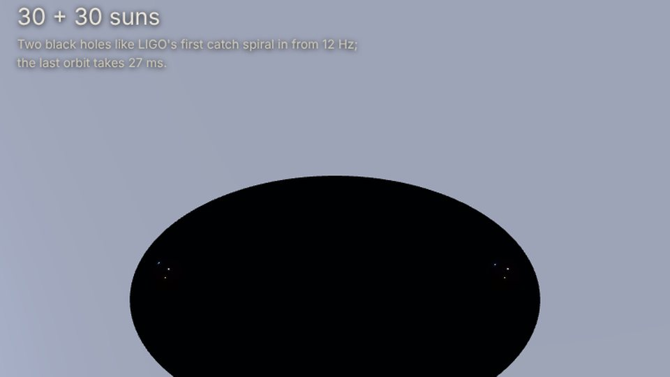
Chirp
Two black holes spiral together and you hear them. The orbit is integrated with radiation reaction and held to Peters’ laws; the strain plays at its real pitch or three octaves up, picture locked to the sound. Use headphones.
X3D demos, 7 October.
3D conqueror by night.
Somewhere around the late '90s I met X3D and never got over it. Now I make AI models write 3D worlds and then hand them to a validator that tells them, exactly and without mercy, what they got wrong. I call it the tether, because X3D is the 3D format an AI can be held accountable to. My colleagues call it “why is that laptop fan screaming again.”
Things I have, technically, built: a particle collider, a drift racing game, a glass brain, a turkey made of ontologies with a sun for a heart, and a space elevator nobody asked for. Things I have, technically, not done: sleep.
Motto: valid is not the same as visible. Second motto: one more demo.
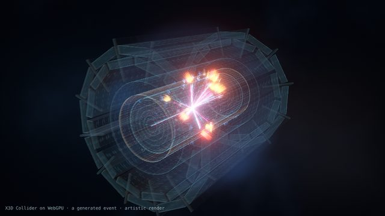
Five generated collision events written as X3D 4.0. The page parses the scene, runs its ROUTEs and draws it with WebGPU, with five GLSL shaders ported to WGSL.
Version 2 (v1 kept). The X_ITE twin lives on its own site (the dirac repository) and has its own tour, optics and 4K still. Drag to orbit, scroll to zoom, keys 1 2 3 for viewpoints, T tour, L look. Events are generated for display, not measured. Each event grows over time, so a page can open on the vertex flash.
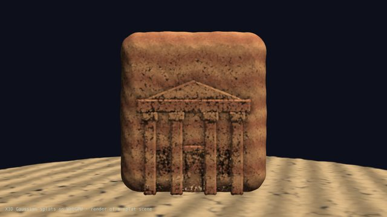
A synthetic rock-cut facade of 140,000 Gaussian splats, written as X3D 4.1. It is generated (CC0) and is not a scan of any real monument. Splats are sorted on the GPU every time the view changes.
Version 2 (v1 kept). 12 MB page; it takes a moment to load. Compared with X_ITE 16.4.3 on one view: 41.9 dB PSNR (software GL, correctness only).
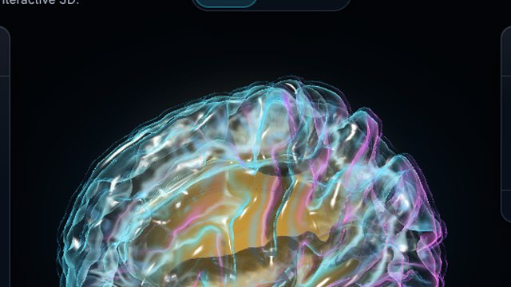
An interactive brain with glass cortex, deep structures, MRI slices and synthetic tracts, plus a CT torso tab. An X3D reader of our own parses the scene and runs its ROUTEs; Babylon.js draws it with WebGPU. Click a region, take the tour, switch looks, try the Inside view.
Version 1 is untouched; version 2 draws the same pixels and adds a shared adapter retry, the Windows flag note and an opt-in Timing button that prints numbers for you to copy (no timing from a real GPU has been published yet). Needs WebGPU and loads Babylon from a CDN. The X_ITE twin (X_ITE 16.6.0, bundled) is the page this one was ported from and needs only WebGL; it carries the same notices. Not a medical device. The brain is a template average, the tracts are synthetic and the activation is illustrative. Cortex shapes: TemplateFlow fsaverage (FreeSurfer lineage), shown for educational use; its licence is not confirmed and the rights holder may ask for removal. Deep structures and slices: MNI152NLin2009cAsym (Fonov et al.). Torso: TotalSegmentator example subject (Wasserthal et al., 2023).
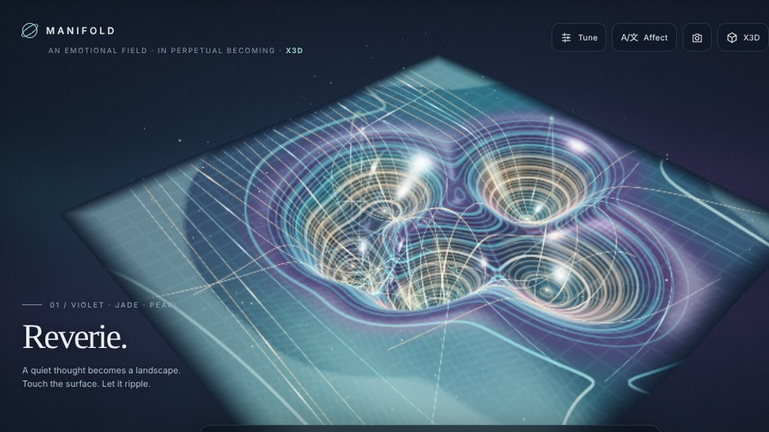
An emotional field drawn as a Riemannian surface: the metric g = λ²(dx² + dz²), the surface coloured by its Gaussian curvature K = −Δ ln λ / λ², and the luminous paths are its geodesics. One X3D 4.0 scene, drawn by X_ITE 16.5.1. Four moods, labels in English and Chinese, click to perturb the field.
Not WebGPU. This is a copy of the x3d.STEM repository’s manifold study (files identical to the original site’s, checked by hash); the original site is linked too. Drag to orbit, scroll to zoom, click to perturb, H hides the controls. The scene was rebuilt from an existing WebGL page; its debrief records the checks (curvature and geodesics against exact references, and a picture comparison against the original on four moods, SSIM 0.91 to 0.96). The drawn landscape is a picture of the metric, not an isometric embedding, and the mood labels are illustrative. Preview frame drawn on a software GPU. The comparison frames from the debrief are left out of this copy.
Science and maths as X3D worlds that carry their own evidence. Each study is an X_ITE page built from computed data and checked against an exact or published result. These are the repository versions, not WebGPU ports. Every page re-checks each data file against the hash recorded in the repository before it draws anything.

Two black holes spiral together and you hear them. The orbit is integrated with radiation reaction and held to Peters’ laws; the strain plays at its real pitch or three octaves up, picture locked to the sound. Use headphones.
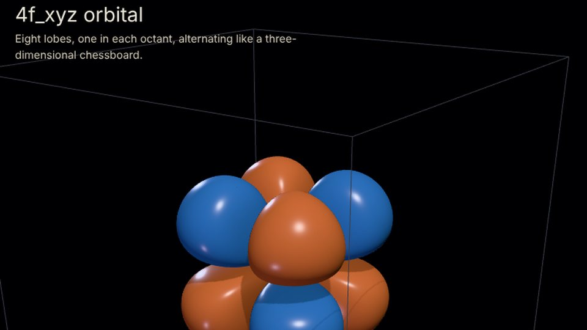
Hydrogen solved numerically and held to the exact answers: ten orbitals from 1s to 5g, coloured by the sign of the wave, and Lyman-α, whose charge swings through the nucleus at the frequency of hydrogen’s 121.5 nm line.
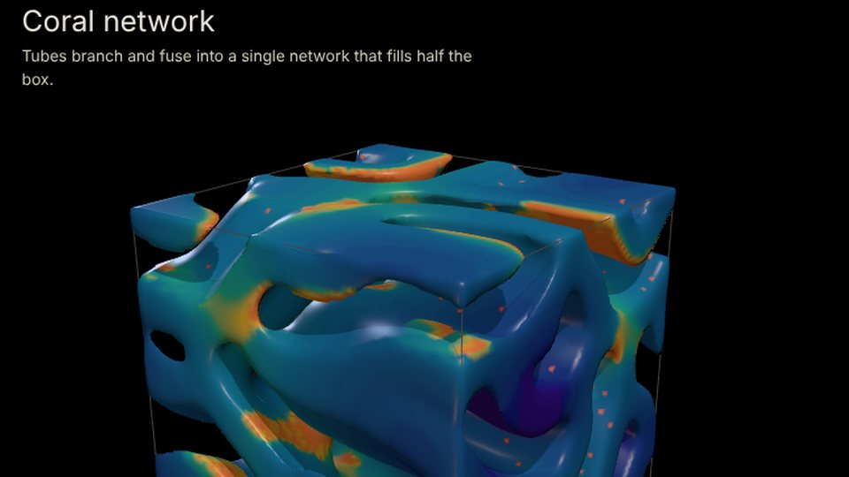
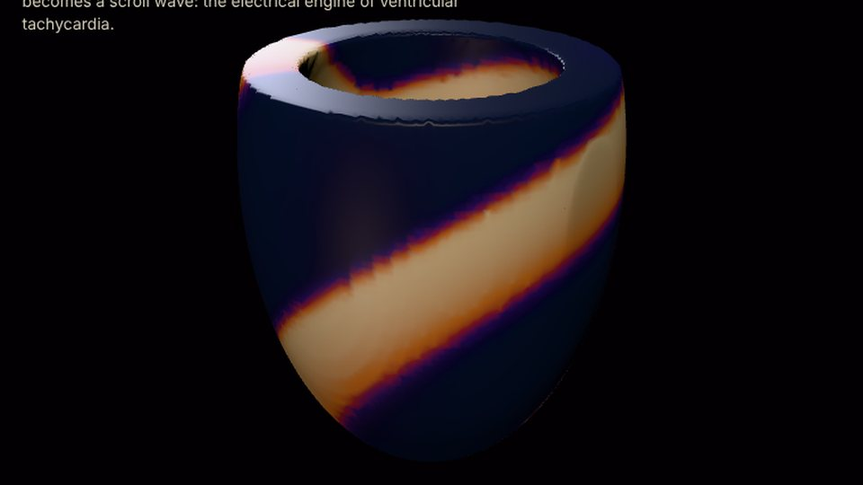
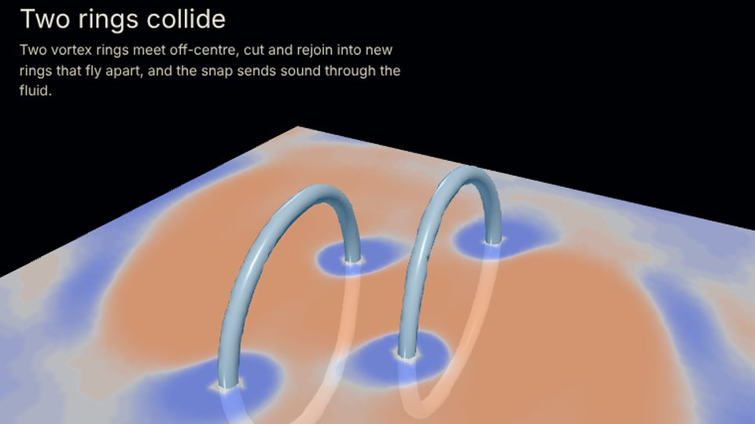
How these got here. The repository does not commit the studies’ data files, so I rebuilt them with each study’s own builder on 2026-11-07 (every witness green on every case) and bundled them with the pages. The pages then verified against the repository’s recorded hashes in a headless browser. Kerr 2 is left out because its data is about 330 MB of images. Flagship pass 1; nothing here has been measured on a real GPU, and the study pages show their own live frame rate, which is yours, not ours.
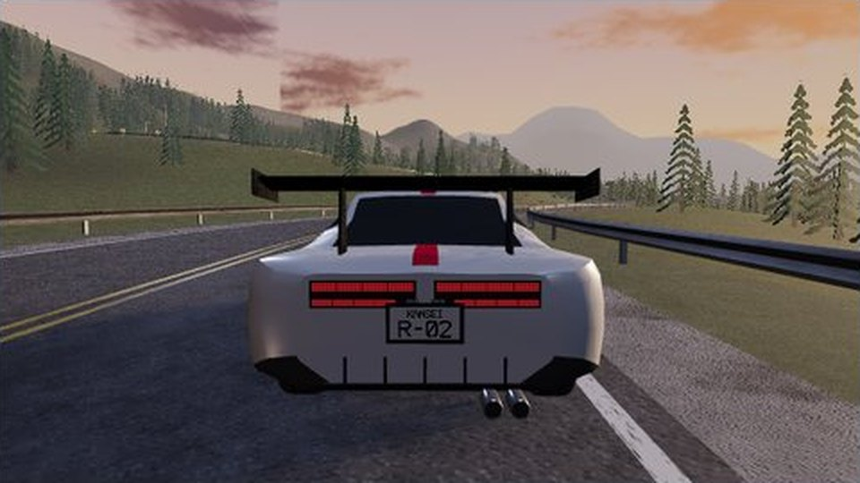
A night-drift racing game with four original cars and five circuits. Every world in it is an X3D file, and the physics is a separate deterministic 120 Hz simulation, so a recorded lap replays identically in any renderer. This page runs it in Babylon.js 9.32.0 in WebGPU mode, through our own X3D reader. Gamepad and touch work too.
Hosted on its own site (the platformer repository), so these links leave this page. Keys: W gas, S brake, A and D steer, Space handbrake, Shift boost, C camera, M sound. Needs WebGPU; if the page says no adapter answered, see the flag tip at the top. Checked on a software GPU against the same game on X_ITE 16.5.1: the simulation matched on 6 of 6 recorded views and the pictures agreed to 24.4 to 32.8 dB PSNR (correctness only; the receipt has the per-view table and the known differences). It has an opt-in Timing button, off until pressed, that uploads nothing. No timing from a real GPU is published here. The sound is the game’s own synthesiser and nobody has listened to it in this port.
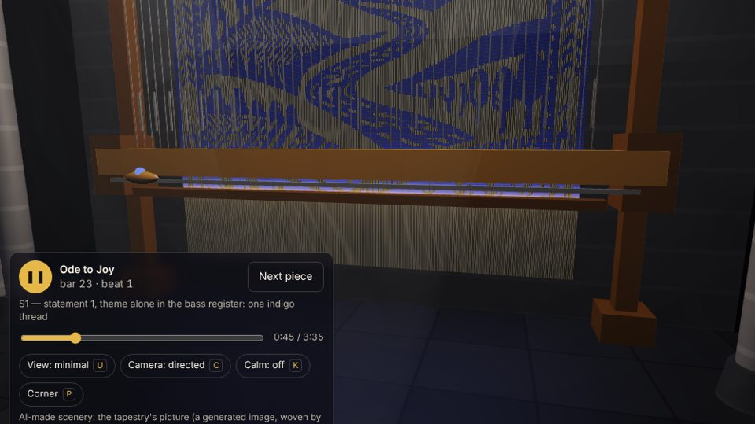
Two programmable machines play two pieces of music. World 1, Ode to Joy (Beethoven, 1824): a Jacquard loom in a cathedral of light weaves a tapestry, and each statement of the theme lays down one colour layer. World 2, Rondo alla Turca (Mozart, 1783): a pinned brass barrel carries every written note as a pin, a steel comb plucks them and a clockwork band strikes on the beat. Every thread, pin, tile and light is a real note from the score. Press Play; sound starts only then.
Keys: 1 and 2 switch piece, U cycles the interface (none, minimal, Learn: names the note under the pointer), Space plays and pauses, Left and Right step bars, C frees the camera, K calms it. It runs in X_ITE 16.5.1 (WebGL), no flag needed. The sound is synthesised in code except the Alla Turca piano, which uses the Salamander Grand Piano (CC BY 3.0); it is not a recording of anyone playing. The audio meters read −14.00 LUFS on both pieces, but no human has reported listening to the masters yet, so the ear is the open check. On a software renderer it ran at the machine’s own pace; about 60 fps was seen once on an integrated GPU (3 November). The tapestry picture, the dome motifs and the moving pictures behind the title and end cards are AI-made and labelled on the page. Licence: everything derived from the Alla Turca score is CC BY-NC-SA 4.0 (non-commercial, share-alike); the rest is MIT, and NOTICE.md travels with the page.
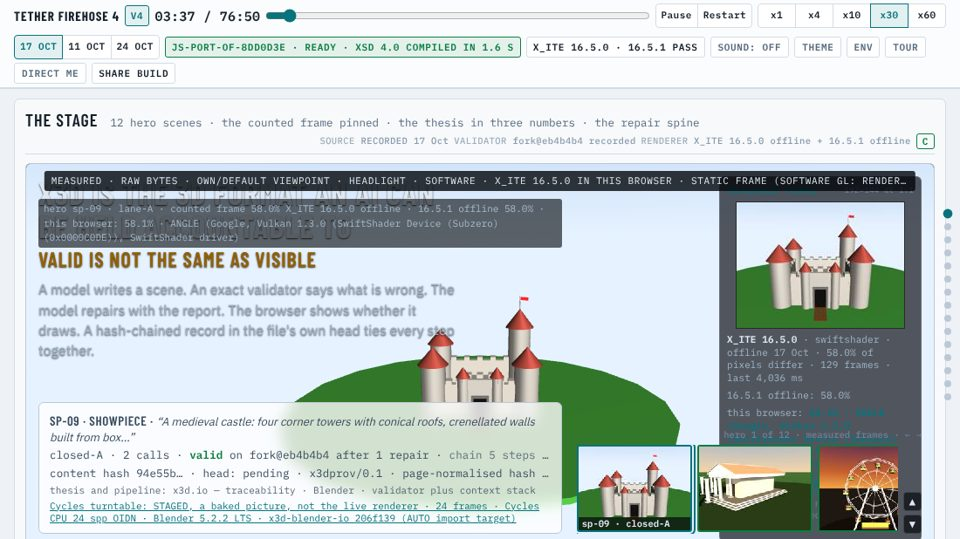
A model writes an X3D scene; an exact validator says what is wrong; the model repairs it with the report; the browser shows whether it draws; a hash-chained record in the file’s own head ties every step together. This page replays a recorded run of 358 real model calls on 17 October 2026 (50 prompts, five model lanes, names withheld in this build) next to the 11 October replay and the 24 October bench, with a repair morph, a tamper arena and a Blender export suite. Its thesis is on the stage: valid is not the same as visible.
The page’s own headline: valid scenes rose from 20 to 98, 57 to 100 and 77 to 100 percent on the three paid lanes after repair, and 7 of the 178 scenes valid at the end still draw nothing in X_ITE. Validator: the x3d_mcp fork at eb4b4b4; renderer X_ITE 16.5.0 and 16.5.1; grade C for this sample only (one run per prompt), so read the rates as examples, not as a ranking. This is the share build: lane names, hardware and run costs are removed (the spend column reads zero by design) and a leak sweep must pass for it to build. Open it on a laptop; the stage renders live and a software GPU is slow.
Repositories on the two accounts that were pushed to since 7 October 2026 and are the work itself, not forks of other people’s projects. Live sites first, then source-only repositories. Links only; nothing is copied here.
Eleven demos in plain X3D you can open and check: splats, terrain, stars, the Shroud of Turin, and Blender and the browser rendering the same file.
Small scripts-free X3D 4.0 toys. Each one runs in X_ITE and in X3DOM: a flywheel, a spiral galaxy and more.
An X3D piece with a Listen button, a full-score view, sections and four cameras. It carries a credited mural photograph from Wikimedia Commons.
Seventeen masterclass guides on graph analytics, data engineering and knowledge systems, plus graph-visualisation pages.
The collider on X_ITE, with its own tour and optics. Also linked from Demo 1.
The drift game on Babylon WebGPU. Also Demo 6.
Loomsong: Beethoven’s Ode to Joy and Mozart’s Rondo alla Turca as machines. Playable as Demo 7.
X3D traceability and observability for ML pipelines: a hash-chained provenance record that rides in the scene itself. Demo 8 is its page.
The X3D Loom: a method for building X3D worlds that carry their own evidence, with the checking kit. It also holds the WebGPU ports behind Demos 1 to 6.
A working fork of Blender’s X3D add-on, bringing the exporter and importer up to X3D 4.0 and 4.1.
An MCP server for generating, validating and converting X3D content (a fork).
Exploratory analysis of a family of repositories’ git history, with the output as an X3D world you fly through: a time helix, a tie constellation, a code city.
The ontology and Gobbler work.
An interactive piece published as a Claude artifact, open to anyone with the link.
The six STEM studies behind Demo 5, plus the manifold study.
Left out on purpose: forks of other people’s projects (game engines, CAD tools, agent frameworks) and private repositories.
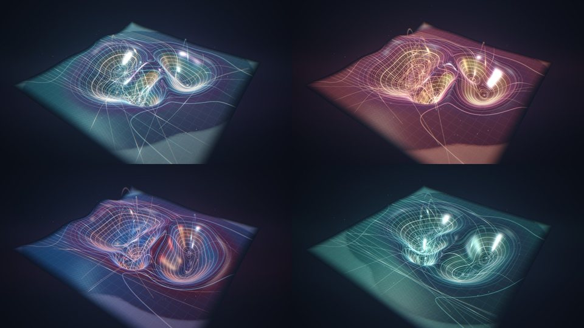
The same X3D scene as Demo 4, drawn by Babylon.js 9.32.0 in WebGPU mode through our own X3D reader, with all seven shaders ported to WGSL by hand. Bloom, vignette, film grain and a touch of chromatic aberration are on by default; the lens switch turns them off, and “lens off” is the frame as authored. It looks richer than the X_ITE page on purpose, but it does not change the data: the geometry, the field and the geodesics are the same.
Needs Chrome or Edge 113 or later with WebGPU; on Windows Chrome it may need chrome://flags/#enable-unsafe-webgpu (the page says so too). It loads Babylon from a CDN with an integrity hash. Checked on a software GPU at 640 × 360 with the lens off, against X_ITE 16.5.1 on the same scene and camera: Reverie 49.3 dB, Euphoria 48.5 dB (Catharsis and Stillness not compared yet). That is correctness only; no timings exist. The page has an opt-in Timing button that prints a copy-paste block; real-machine numbers are expected from a Windows laptop and a Mac, and none are published yet. Screenshots above are from the software renderer. Source: x3d.loom, PR 19 (x3d.webgpu/demo/src/build-manifold.py), receipt runs/webgpu-manifold-20261107/RECEIPT.md.
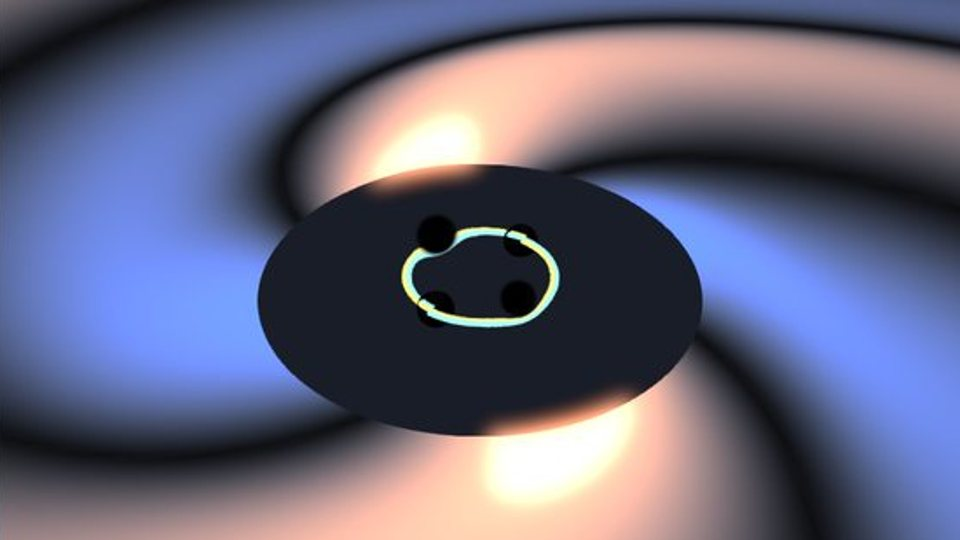
The Chirp study from Demo 5, drawn by Babylon.js 9.32.0 in WebGPU mode through our own X3D reader. The study’s own script runs byte for byte unchanged; only the drawing is new: an HDR bloom, a hand-written WGSL post-process that bends the light around the two holes, an unlit glowing wave sheet and glowing trails. The look is optional and on by default; a pill on the page (or ?look=0) switches to the frame as authored.
One offline file (about 6 MB) that loads Babylon from a CDN with an integrity hash. Needs Chrome or Edge 113 or later with WebGPU (Windows Chrome may need chrome://flags/#enable-unsafe-webgpu). The page runs the study’s own browser witness: the wave heights agree with the builder to 2e-15 on all three inspirals. Compared with X_ITE 16.5.1 on a software GPU the plain look differs by 24.9 to 25.4 dB (the gaps are logged, not tuned away: this port chased intensity, not pixel perfection). Not yet checked: the Hear button (audio), Safari and Firefox; no timings and no real-GPU numbers; no Timing button yet. Source: x3d.loom, PR 21 (x3d.webgpu/demo/src/build-chirp.py --kind chirp).
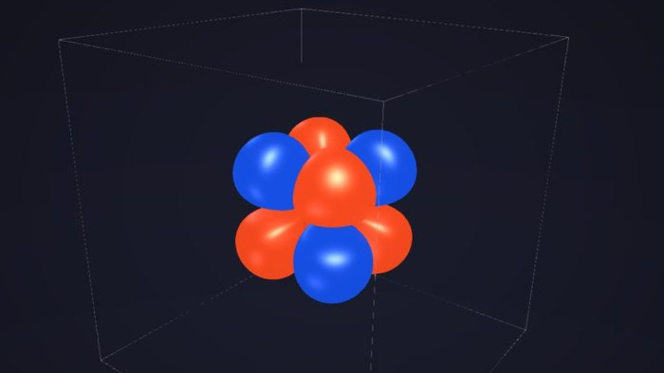
The Electron Cloud study from Demo 5 on Babylon WebGPU: hydrogen orbitals as glossy shells with a glowing rim, a soft fill light, bloom and vignette. The cut slider and the Lyman playback work, and the study’s own script is unchanged. The look is optional and on by default; the pill (or ?look=0) shows the frame as authored.
One offline file (about 9 MB), Babylon from a CDN with an integrity hash. Needs Chrome or Edge 113 or later with WebGPU. The page’s browser witness passes (the 4fxyz orbital to 1e-15; 24 of 24 Lyman frames to 5e-15). Against X_ITE 16.5.1 on a software GPU the plain look is 19.2 to 19.4 dB over the whole frame and 21.0 to 25.0 dB on the object pixels (the X_ITE headless background draws black, which accounts for part of it); gaps are logged, not tuned away. Not yet checked: Safari and Firefox; no timings and no real-GPU numbers; no Timing button yet. Source: x3d.loom, PR 21 (build-chirp.py --kind cloud).
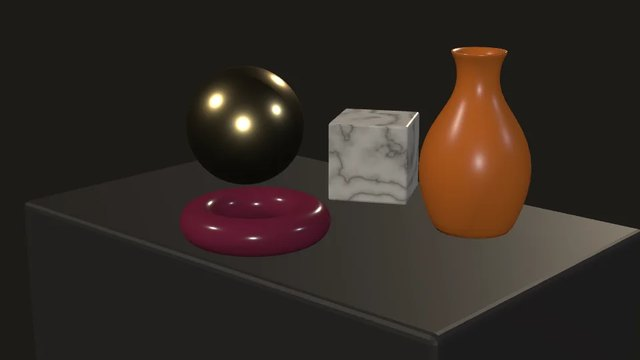
Twelve small X3D scenes from the work on Blender’s X3D add-on, each with the validator’s verdict on that exact file. A still life exported from Blender as X3D 4.0 and measured against Cycles; the same still life as 24,000 Gaussian splats; splat quaternion order; the 978 stars within 50 light-years; a repair loop; a lighting bug; NURBS weights; PhysicalMaterial and profiles; GeoLOD; an unregistered component; ellipsoids beyond Earth; LOD under a scale. Each starts as a still; press Load live 3D.
X_ITE 16.6.0 is bundled with the page; it fetches nothing from a CDN. All 24 scenes load on it; annotation.x3d reports an unknown AnnotationTarget node, which is that demo’s subject. The still life scores SSIM 0.905 against the Cycles path tracer (the page’s own measurement, X_ITE 16.4.3). X_ITE 16.6.0 still reads splat orientations as x y z w. Stills and timings on the page were taken on 16.4.3.
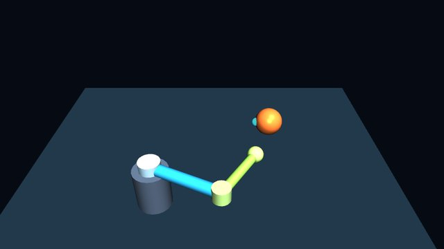
Author an articulated arm in X3D, simulate it in MuJoCo, and bring poses, forces and experiment records back into the scene. Drag the cyan sphere to set a goal and the orange sphere to place an obstacle, then press Run physics; export the scene or an experiment package.
Real MuJoCo 3.17.0 compiled to WebAssembly (Apache-2.0) and X_ITE 16.7.0, both bundled; no network requests. The page is 29 MB. Experimental bridge 0.1 with a bounded contact-arm/1 profile, not a general converter or native X3D physics. The console shows five X_ITE parser warnings from the app’s generated metadata, as delivered.
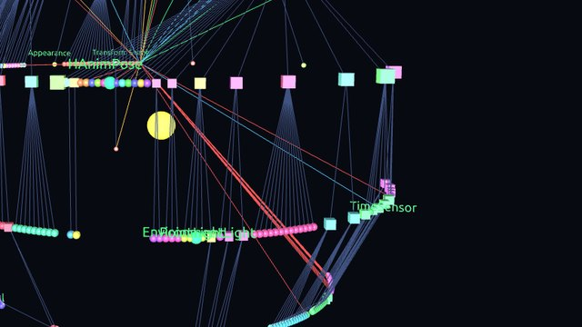
364 classes of the X3D Ontology 4.1 (Web3D draft, 29 September 2026) on a Dyson-style shell: longitude is a layout angle, latitude is class depth. Boxes are abstract types, spheres concrete nodes; green is new in 4.1. The layout is a display choice, not an ontology fact.
One X3D 4.1 file, unchanged, with three viewpoints (Overview, Inside the shell, Top) and X_ITE 16.6.0 bundled.
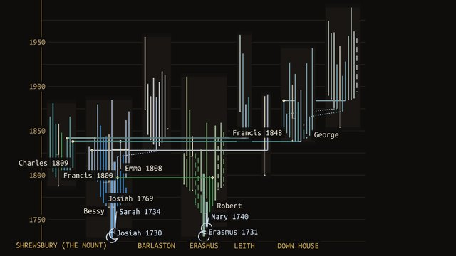
Three families woven as cloth: lives are the warp, marriages the weft. Darwin–Wedgwood, Habsburg and Rothschild, each also as a hypersphere and a pocket world in X3D, with a narrated tour and a year slider.
The 26 portraits are AI portraits after public-domain sources, each labelled on the page; anyone not approved shows a monogram, never a face. Fonts load from Google Fonts. X_ITE 16.5.1 bundled.
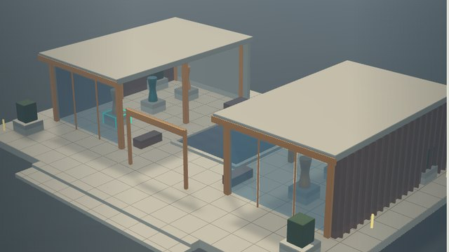
A gallery whose every building element keeps its IFC identity: 111 products, 23 shared meshes, baked light and its own shaders. Use the camera shots, the atmospheres (daylight, nocturne, study), the element search and the inspector.
The live studio is a transactional bridge: a Python server (IfcOpenShell) owns the IFC model and sends each revision over a WebSocket. A static site cannot run it, so this copy replays one recorded revision: the scene is byte-identical and its receipt hash is still checked, and the matching model.ifc can be downloaded. Editing, peer views and live commits need the server. X_ITE 16.5.1 bundled.
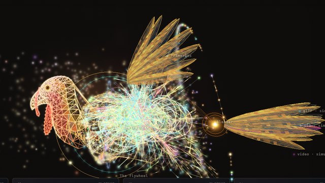
A constellation becomes a creature, and inside its heart four places wait: Giza, the Pantheon as 50,058 Gaussian splats, a cabinet of materials, and the Drillfield at Virginia Tech. Choose Begin journey or a world card; drag to orbit, scroll to travel.
Worlds load on demand and the page verifies each scene’s hash. Giza’s Hall of Records is fictional. The Pantheon is an appearance sample whose source and licence are not stated. The Drillfield’s imagery and surface model come from the Google Solar API and are attributed to Google.
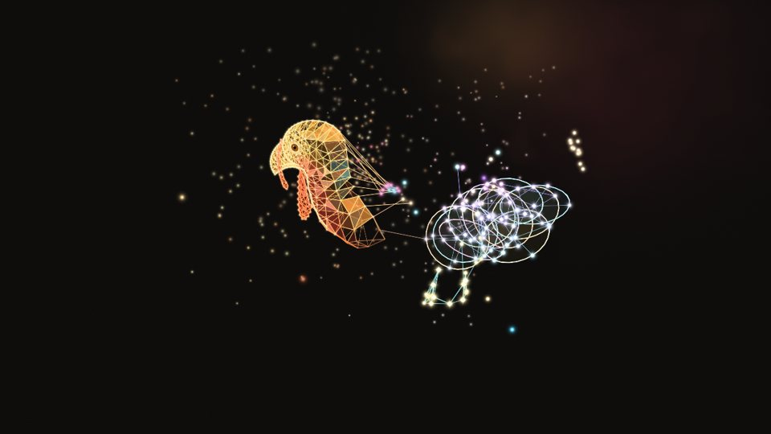
The Gobbler as a knowledge graph drawn as a creature: one scriptless X3D 4.0 scene (121 entities in 10 loops), drawn by Babylon.js 9.32.0 in WebGPU mode through our own X3D reader. The page’s own explorer and tour run unchanged; touch the head and it dissolves into embers.
Needs a WebGPU browser: Chrome or Edge 113 or later, Safari 26, Firefox 141; on Windows with an Intel UHD 620 Chrome may need chrome://flags/#enable-unsafe-webgpu (the page says so itself). It loads Babylon from a CDN with an integrity hash. Checked against X_ITE 16.5.1 on a software adapter, correctness only: six views score 14.6 to 19.7 dB, low because the scene’s animation phases differ between captures, so this is not a pixel-parity claim. Known gaps: stars are camera-facing quads rather than point sprites, embers are approximated, picking covers the head’s facets only, the 2,476-star deep build was not run, nothing is timed on a real GPU, the page has not been seen on screen on a real GPU yet, without WebGPU it shows a full-screen message with no close button, and Safari and Firefox are unchecked. The page has an opt-in Timing button; ignore its live “fps” readout, which counts display callbacks, not scene time. The graph’s individual outside contributors are shown as “Open-source maintainer”. Source: x3d.loom, PR 22 (x3d.webgpu/demo/src/build-gobbler.py).
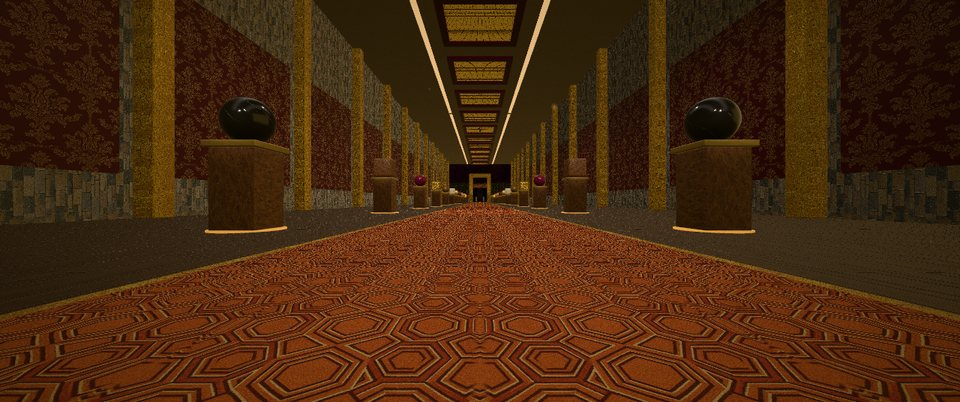
A 138-second film carried by one X3D 4.0 file: the set, 35 materials, 60 lights and the director’s camera. The page has three engines for the same file: X_ITE, a three.js WebGPU engine, and now Babylon.js 9.32.0 in WebGPU mode through our own X3D reader, which opens first. A Look switch adds reflections, bloom, grain, dust and three shadows on top of what the file says, and turns off for the file as authored.
Needs a WebGPU browser: Chrome or Edge 113 or later, Safari 26, Firefox 141; on Windows with an Intel UHD 620 Chrome may need chrome://flags/#enable-unsafe-webgpu. Babylon loads from a CDN with an integrity hash and only when its engine starts; the page’s typefaces come from Google Fonts. The page is about 32 MB because it carries all three engines. Checked against X_ITE 16.4.3 on a software adapter, correctness only: with Look off, six film times score 25.5 to 30.7 dB; with Look on, 18.4 to 28.2 dB, lower by design because it adds to the picture. Not tuned to those numbers and not pixel perfect. Known gaps: no depth of field, no light shafts, nothing is timed on a real GPU (the page’s Bench measures on your own), Safari and Firefox are unchecked, the three.js engine could not be captured by the headless rig, and the X_ITE engine logs a missing line-type texture that the original page also lacks. The film has no sound. Source: x3d.loom, PR 23 (x3d.webgpu/demo/src/build-odyssey.py).
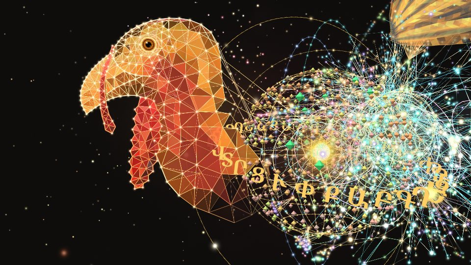
The bird first: the Gobbler head, the Sun in its chest that beats a replay of real validator runs, a Dyson ribcage of ontology classes, the ring of the 36 Armenian letters, and a tail fan. Fly the zoom ladder with keys 1 to 8, down through the Earth and Moon to a Blender-modelled village. It is one X3D scene drawn by Babylon.js 9.32.0 in WebGPU mode through our own X3D reader, with the page’s own explorer, tour, hover cards and sound (key M) running unchanged.
Needs a WebGPU browser: Chrome or Edge 113 or later, Safari 26, Firefox 141; on Windows with an Intel UHD 620 Chrome may need chrome://flags/#enable-unsafe-webgpu. Babylon loads from a CDN with an integrity hash. The knowledge graph in this public copy is redacted: entries that touched private notes, people, costs or accounts show as “(redacted)” or “A person” with no text, and no file names; counts and positions are unchanged, so some hover cards are empty on purpose. Checked against X_ITE 16.5.1 on a software adapter, correctness only: the eight ladder views all draw, and the picture scores 7 to 13 dB against X_ITE, which means little because animation phases differ and X_ITE’s village frame is black on that rig. Known gaps: the humanoid figures are not skinned (they move as rigid parts), sound and click-to-pin were not exercised, the frame reads brighter than X_ITE’s, nothing is timed on a real GPU, and Safari and Firefox are unchecked. Source: x3d.loom, PR 24 (x3d.webgpu/demo/src/build-demiurge.py).
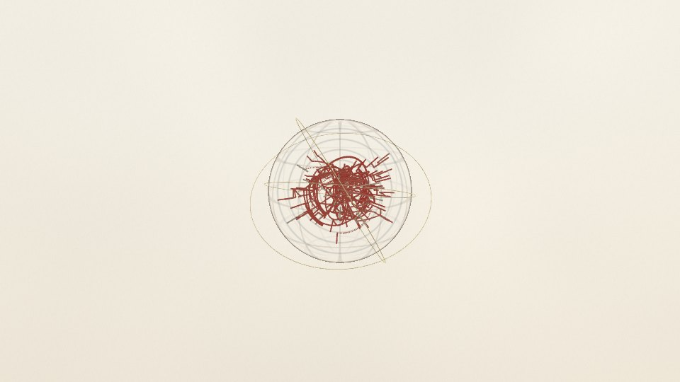
An atlas of three families (Rothschild, Habsburg, Darwin–Wedgwood). Its hypersphere view is a sphere of time: the founders sit at the centre, the present is the glass, each life is a fibre running outward and each marriage an arc. Here that view is drawn by Babylon.js 9.32.0 in WebGPU mode through our own X3D reader; the page’s own scripts, lens, tour and night look run unchanged. The tapestry view (Loom) stays on X_ITE, so the page is a hybrid, and without WebGPU both views use X_ITE.
Needs a WebGPU browser for the hypersphere: Chrome or Edge 113 or later, Safari 26, Firefox 141; on Windows with an Intel UHD 620 Chrome may need chrome://flags/#enable-unsafe-webgpu. Babylon loads from a CDN with an integrity hash; typefaces come from Google Fonts. Checked against X_ITE 16.5.1 on a software adapter, correctness only: eight museum shots score 29.0 to 37.8 dB, the night look and the selection and lens shots 36.3 to 39.4 dB, and a visitor play test (flight, select, lens, tour, tiers, family, night look, tapestry round trip) ran with no page errors. The 26 portraits are AI-made after public-domain paintings or photographs, or imagined where no likeness survives, and each one says which. Known gaps: the tapestry is not ported, no logarithmic depth, taps and hover were driven through the page’s own test surface, nothing is timed on a real GPU, and Safari and Firefox are unchecked. Source: x3d.loom, PR 25 (x3d.webgpu/demo/src/build-dynasty.py).
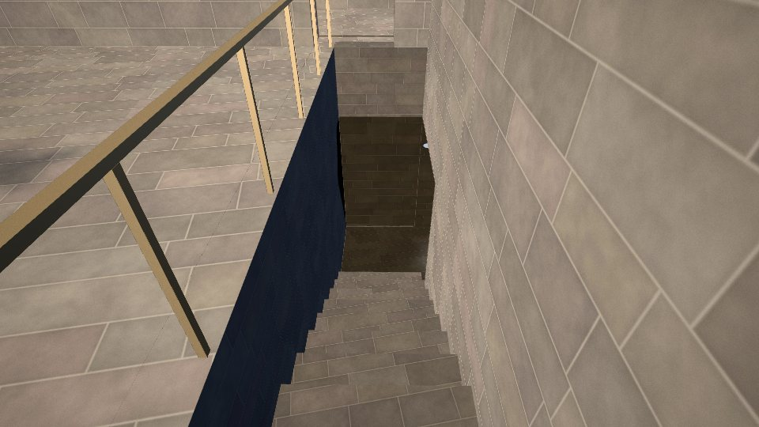
A 299-second film through the hall of a library, carried by one 14 MB X3D file with 23 viewpoints and no custom shaders: stone, oak, bronze, lamps, a sky dome and a galaxy 2.4 km out. It is drawn by Babylon.js 9.32.0 in WebGPU mode through our own X3D reader, with an X_ITE button on the page to compare the same file.
Needs a WebGPU browser: Chrome or Edge 113 or later, Safari 26, Firefox 141; on Windows with an Intel UHD 620 Chrome may need chrome://flags/#enable-unsafe-webgpu. It is a large page, about 38 MB with textures and the X_ITE comparison engine. Babylon loads from a CDN with an integrity hash; typefaces come from Google Fonts. Checked against X_ITE 16.5.1 on a software adapter, correctness only: five matched shots score 17.5 to 25.3 dB, geometry and the film clock agree, and lamp-lit interiors read 1.2 to 1.4 times brighter than X_ITE’s. Not tuned to those numbers. Known gaps: Text nodes are not drawn (the plaques and two fonts), one shadow map per shadow light, nothing is timed on a real GPU, only five of 23 viewpoints were compared, no audio was tried, and Safari and Firefox are unchecked. Source: x3d.loom, PR 27.
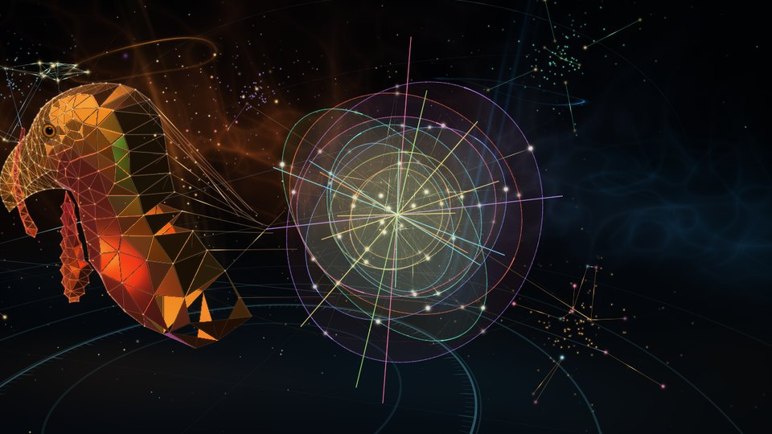
The ten feedback loops of the Gobbler graph become ten hoops of a gyroscope on one centre, with the spiky atom at its core, five little force-directed graphs flinging their minor nodes into the dark, and the disco floor below. The hoops really move: a WebGPU compute pass integrates each one as a heavy spinning top every frame (precession, a little nutation, alternate spin senses), or turns them as a Keplerian orrery, or lets them breathe. The spokes draw in and out on four curves (spring, golden cascade, logarithmic spiral, sine). The Flywheel lab panel picks a loop, isolates it and shows its live angles. It is one X3D scene drawn by Babylon.js 9.32.0 in WebGPU mode through our own X3D reader.
Needs a WebGPU browser with compute shaders: Chrome or Edge 113 or later, Safari 26, Firefox 141; on Windows with an Intel UHD 620 Chrome may need chrome://flags/#enable-unsafe-webgpu. Keys: G changes the motion, S animates the spokes; ?kin=still in the address starts it still, as does a reduced-motion setting. Babylon loads from a CDN with an integrity hash. The motion is presentation only: the X3D coordinates never change, and the graph is the same 121 entities and 162 relations as Demo 18, with the same three maintainer handles replaced. Checked on a software adapter only, correctness only: the compute pass runs, the hoops, spokes and discs move, and there are no page errors. Known gaps: labels follow the hoops through a readback a frame or two late (seconds late on the software adapter), the selected-node flow overlay stays at the authored positions, the page’s download buttons were not tried here, nothing is timed on a real GPU, and Safari and Firefox are unchecked. Built with a second model’s Meridian refinement (smoother rings, the lab panel) folded in.
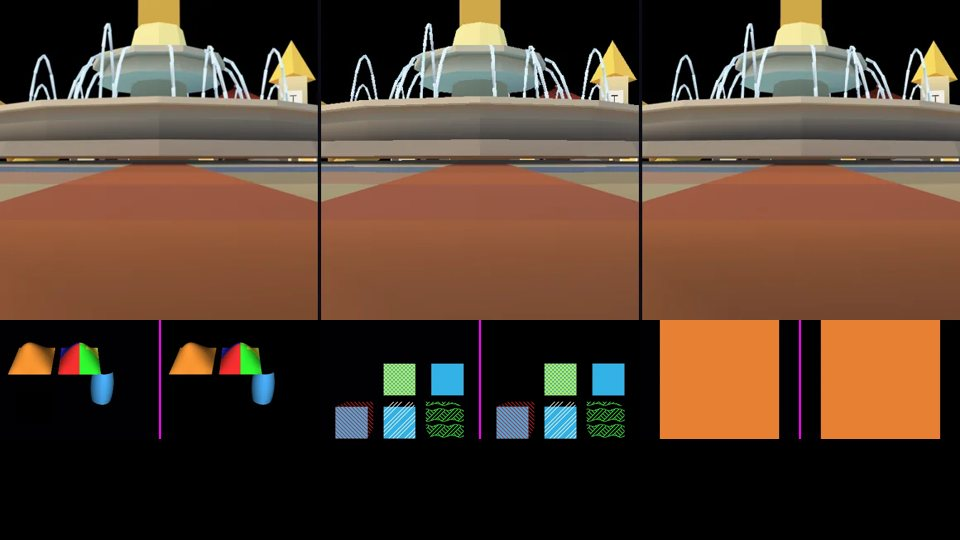
Two translators, checked. Version 2 adds the physics and volume batches, with new pictures of Babylon beside X_ITE, and a board of what is left. The X3D 4.0 to Babylon.js bridge as a 260-node atlas (226 node types recognised: 158 added by the bridge, 95 clean and 63 with logged gaps, plus 68 already in earlier ports) with 53 pictured receipts, and the Blender add-on's export gate (43 of 43 scenes, no regression against recorded baselines), sRGB round-trip audit and a cross-engine scorecard against Cycles. A live pane draws the same Blender scene as X3D in X_ITE and as glb in Babylon. Where the bridge follows the standard and X_ITE does not, the table says so; where we lose or differ, it says that too.
Live panes need WebGL2 only (X_ITE 16.6.0 bundled with Demo 12, Babylon.js 9.32.0 from a CDN). The bridge's own pictures were drawn on a CPU rasteriser (SwiftShader): no GPU timing is claimed.
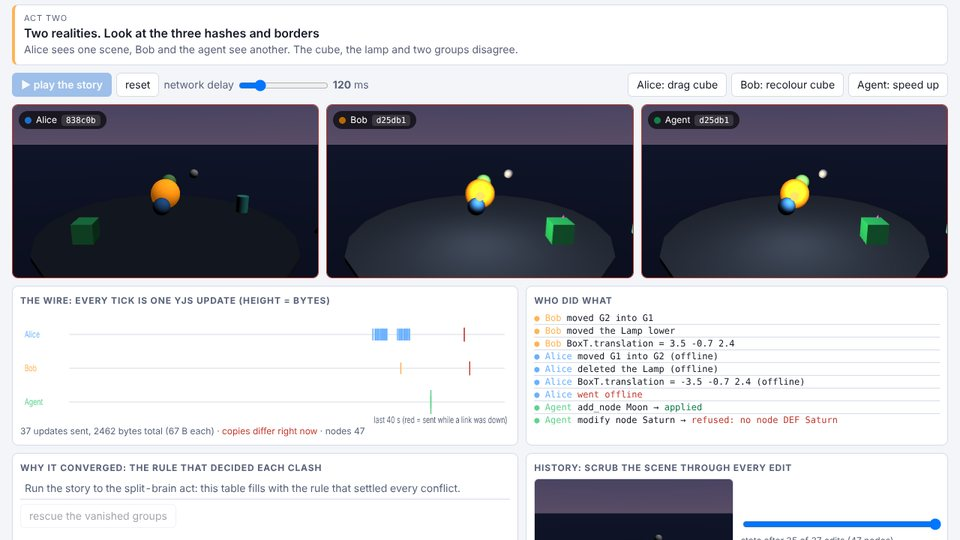
Alice and Bob are two browsers, the third author is an agent, and each holds its own copy of one animated X3D scene as a Yjs document. Press play: Alice drags a cube while Bob recolours it and both edits survive; the agent speeds up the planets and is refused when it names a node that does not exist; then Alice's network dies and the sides make conflicting edits (the cube moved two ways, a lamp deleted by one and moved by the other, two groups moved into each other). When the network heals every copy is identical again, and a table names the rule that settled each clash. A history slider rebuilds the scene from the first N updates, and a rescue button brings back the two groups that a concurrent move cut out of the scene.
Needs WebGL2 only (X_ITE 16.6.0 and Yjs 13.6.33 bundled, no network requests). The link between the peers is in the page with an adjustable delay, so the on-screen timings are your browser, not a network; the "agent" is a scripted operation list through the real applier, no model is called. Checked headless on a software GPU (Chromium 153, SwiftShader) for correctness only; no frame rates are claimed.
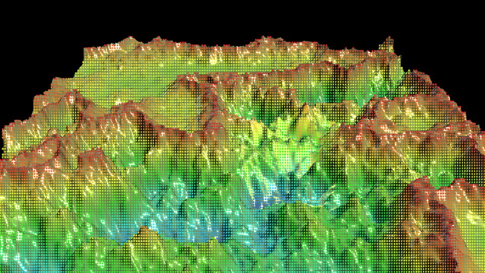
An X3D ElevationGrid of 125,000, 500,000 or 1,000,000 triangles under a TouchSensor, drawn by the three.js bridge with a three-mesh-bvh bounds tree behind the picker. Move the pointer and a glow follows the hit point through an ordinary X3D ROUTE. Three buttons: turn the tree off and on, race it against three.js’s plain raycast on the same rays (with a check that both find the same point), and cast 24,000 rays from the camera as a scan. Every timing on the page is measured live in your browser; the plain-raycast time for the scan is an extrapolation and the page says so. Measured when it was built: on 125,000 triangles the tree picked 33 times faster and found the same point on 23 of 23 rays.
Needs WebGL2 (three 0.187.0 and three-mesh-bvh 0.9.18 from jsDelivr). Checked headless on a software GPU (Chromium 153.0.8010.12, SwiftShader): at a million triangles the page draws about 1 to 2 frames a second there, so no frame rate is claimed.
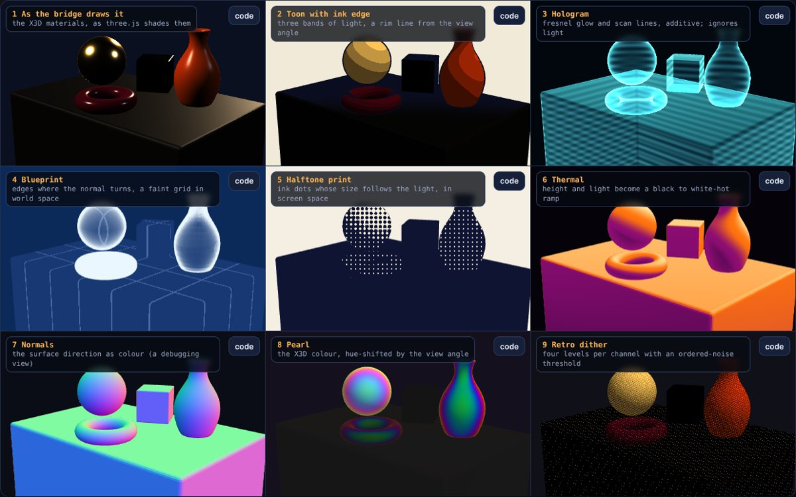
The X3D file is read once and the same scene graph is drawn nine times a frame, each tile with a different three.js Shading Language (TSL) material built from the X3D material’s own colours: the bridge’s own materials, toon with an ink edge, hologram, blueprint, halftone, thermal, normals, pearl and a retro dither. Nothing in the X3D changes; the look belongs to the renderer. Three scenes (Still life, Prismatica, Asterion), a “code” button on every tile that shows its TSL, one camera that any tile can turn, and a double-click to focus one tile. A scene over a million triangles shows a single tile.
Needs WebGL2 (three 0.187.0 from jsDelivr; the renderer is WebGPURenderer and the page says which backend it got). Checked headless on a software GPU, where it chose the WebGL 2 backend and ran at a few frames a second; no WebGPU timing and no frame rate is claimed. Shapes that use a raw GLSL shader are hidden, since a node material cannot restyle them.
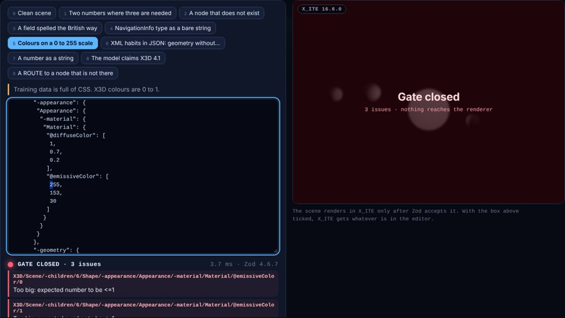
The Web3D X3D 4.0 JSON Schema compiled to Zod in your browser. Break an orrery nine realistic ways a model does, watch the gate name the exact path, replay the repair, and see the 261-node vocabulary shrink to a 25 KB schema (19.6 times smaller) a decoder can be constrained by. Three gates compared on the same nine mistakes (JSON Schema catches 8, the XSD 4, the semantic checks 2), and 1,432 repository scenes judged by four validators that agree on every one.
Zod 4.6.7 bundled (735 KB, 115 KB gzipped), scene drawn by X_ITE 16.6.0 from Demo 12, needs WebGL2. The repair is a scripted replay: no model is called. Timings were taken in a software-only container.
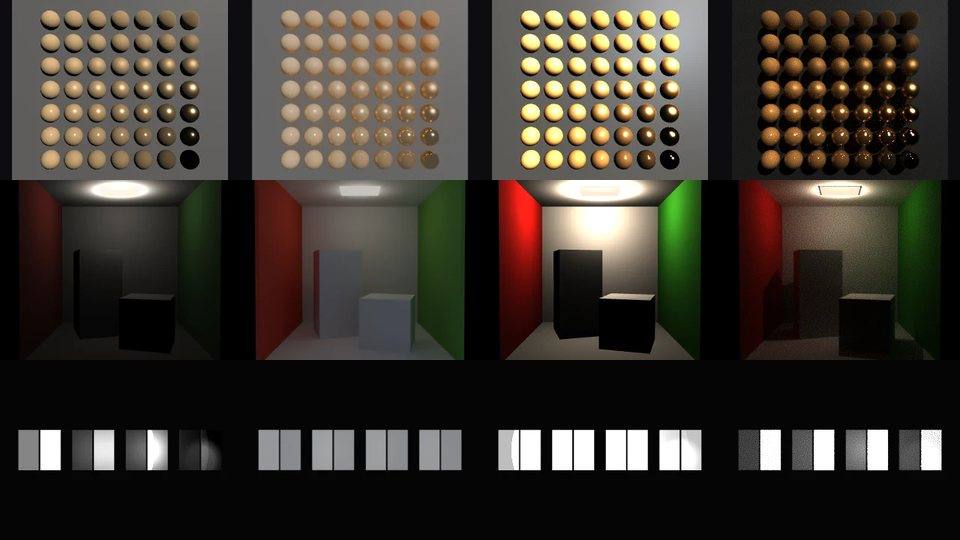
Left of a white line, X_ITE 16.6.0 draws the file the way an X3D browser does: each light shades each surface on its own. Right of it, a path tracer in the page (three-gpu-pathtracer, fed by the x3d.threejs bridge reader and body) follows light bouncing between the surfaces. Drag the line, raise the bounces and watch the red and green walls bleed onto the white boxes; a switch lets emissive surfaces cast light. Three scenes (Cornell box, PBR grid, light ladder), and measured object-pixel FLIP scores of the path tracer, the bridge raster and Cycles against X_ITE, with the rig named and the noise floor (0.055) shown.
Needs WebGL2 (three r187, three-mesh-bvh 0.9.18 and three-gpu-pathtracer 0.0.28 vendored; X_ITE read from the LUMEN Interference demo’s folder). Checked headless on a software GPU for correctness only (a path-traced canvas that is not black after 181 samples); no speed is claimed. The v23 changelog line calls this “Demo 25”; its number is 29 (see CHANGELOG v24).
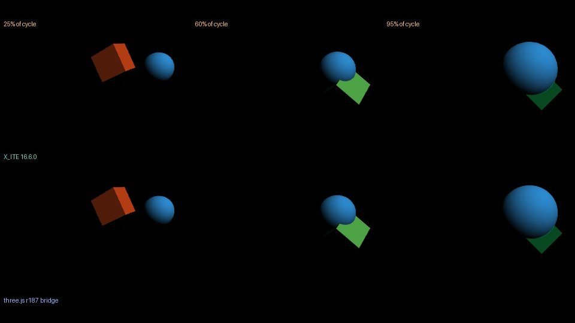
A Theatre.js sequence or a GSAP timeline is turned into one TimeSensor, one interpolator per animated field and two ROUTEs per field. The result plays in any X3D browser with no JavaScript, or the tool keeps the clock and writes plain SAI field values into a running scene; the page loads X_ITE 16.6.0 and plays both. An ease lab bakes any GSAP ease in the page, and the colour finding is shown (X3D’s ColorInterpolator blends in HSV). Every number carries its rig; licence notes cover Theatre core (Apache-2.0), Theatre studio (AGPL-3.0) and GSAP’s standard licence. Version 2 compiles one GSAP timeline into plain X3D that X_ITE and a three.js renderer play in lockstep with no script, and a slider trades file size against error with the real GSAP eases drawn beside it.
Needs WebGL2 (X_ITE 16.6.0 vendored from Demo 12’s folder; GSAP 3.15.1 from jsDelivr). Version 1 receipt numbers: bridge against X_ITE worst 5.7e-7, X_ITE against the tools 0.0069 (Theatre) and 0.0137 (GSAP), twelve picture pairs worst 46.95 dB. Rig: Chromium 153.0.8010.12 SwiftShader, three.js r187. Version 2 was merged marked work in progress, review pending.
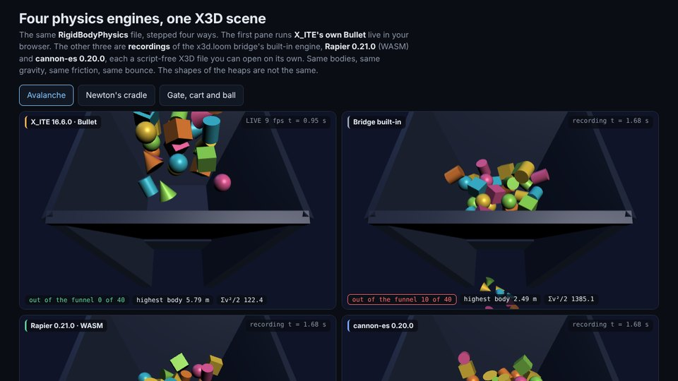
The same RigidBodyPhysics file, stepped four ways. The first pane runs X_ITE’s own Bullet live; the other three are recordings of the bridge’s built-in engine, Rapier 0.21.0 (WASM) and cannon-es 0.20.0, each a script-free X3D file you can open on its own. Same bodies, same gravity, same friction, same bounce, and the heaps are not the same. Three scenes (an avalanche of 40 bodies, Newton’s cradle, a gate with hinge and slider limits), one shared scrub bar and a measured table. Findings shown: the built-in engine has no collider for a Cone (10 of 40 avalanche bodies escape), cannon-es adds energy in a bounce-1 chain, Rapier needs 4 sub-steps for the cradle, and X_ITE never applies hinge limits.
Needs WebGL2 (X_ITE 16.6.0 from a CDN for the live pane). Numbers come from the page’s recorded stats (Node v22.23.4) and the x3d.loom rigid-engines results (Chromium 153.0.8010.12 SwiftShader); the recordings were not replayed in a second host.
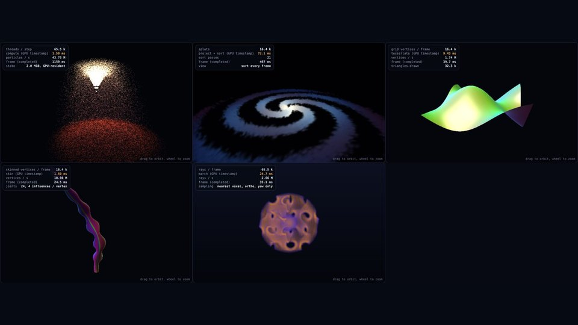
A ParticleSystem (up to 2 million particles), a Gaussian splat cloud with a GPU bitonic sort, a NURBS patch tessellated in WGSL, an HAnim skin and a VolumeData ray march, each driven by the field names its X3D fixture uses and each checked against an independent CPU twin. Move the sliders: the per-frame arithmetic runs in compute shaders, the state stays in GPU memory, and the HUD shows GPU timestamps, not frame counters. A button runs the correctness gate on your GPU (each kernel against its CPU twin) and another a short benchmark, with the recorded run beside it; nothing is uploaded.
Needs a browser with WebGPU; without navigator.gpu the page shows a picture and says why. The recorded run and the in-page gate (5 of 5) were made headless on a software adapter, so the timings there are scaling numbers, not GPU speed.
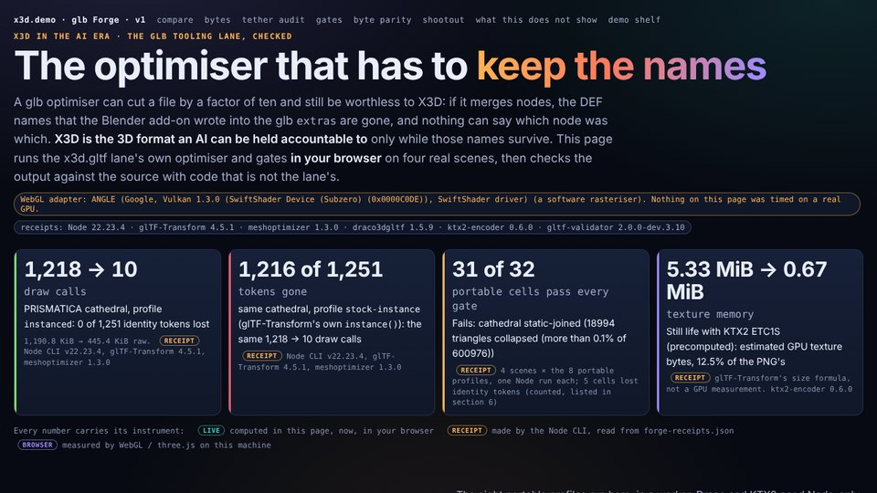
A glb optimiser can cut a file by ten and still be useless to X3D: merge nodes and the DEF names the Blender add-on wrote into the glb are gone. This page runs the x3d.gltf lane’s optimiser in your browser (glTF-Transform and meshoptimizer, in a worker) on four real scenes (the PRISMATICA cathedral, Asterion, LUMEN, Still life), shows the result against the original as a wipe or a difference picture, and checks identity: on the cathedral the stock instance() takes 1,218 draw calls to 10 and erases 1,216 of 1,251 identity tokens, the lane’s profile takes the same 1,218 to 10 and keeps all 1,251. Every number is marked live, receipt or browser.
Needs WebGL2 and a network (three.js r187 from jsDelivr). Draco, KTX2 and the Khronos validator run in Node only; their rows are recorded receipts and the page marks them so. Checked headless on a software adapter (Chromium 153.0.8010.12 SwiftShader), nothing timed on a GPU.
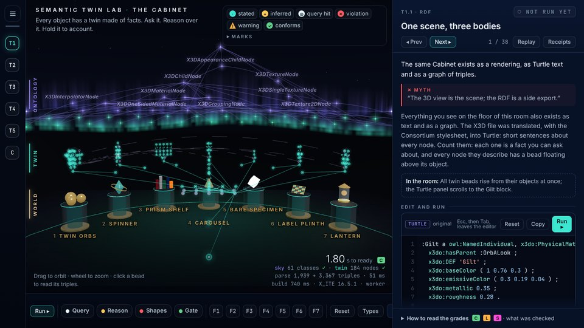
An X3D scene, its RDF twin and the X3D Ontology 4.1 in one room. Every object has a twin made of facts: ask it with SPARQL, reason over it with RDFS, hold it to account with SHACL, and watch an agent do the same through x3d_mcp. Thirty-eight stations take you from one scene with three bodies (the same Cabinet as a rendering, as Turtle and as a graph of triples) up to checks that name what broke. Queries run live in your browser (N3.js, Comunica and shacl-engine); the calls to the x3d_mcp semantic tools are recordings replayed in the page, and the lessons mark what was checked as Confirmed, Likely or Suspected. Version 2, the Evidence Edition, adds a witness workbench that runs without WebGL (four experiments, among them the reasoning counterfactual, where one station’s result goes from 1 to 0 with no edit to the source, and an evidence-integrity check of 58 digests), an evidence field guide that re-measures that case in a second engine (pyshacl 0.40.2 with full RDFS hides the one real result and adds 57,769 new ones on 142 nodes), and a study audit of eight station corrections applied as overlays so the original stations keep their hashes. Version 1 is unchanged.
Needs WebGL2 (X_ITE 16.5.1 and the query engines are bundled with the page; its source names no outside script or data host). No x3d_mcp server is called: the agent runs are recorded. Checked headless on a software GPU with no script errors; the only 404 is X_ITE’s optional UI font. Not on main when this card was written: the demo is in x3d.demo PR 40 and this card points at its path.
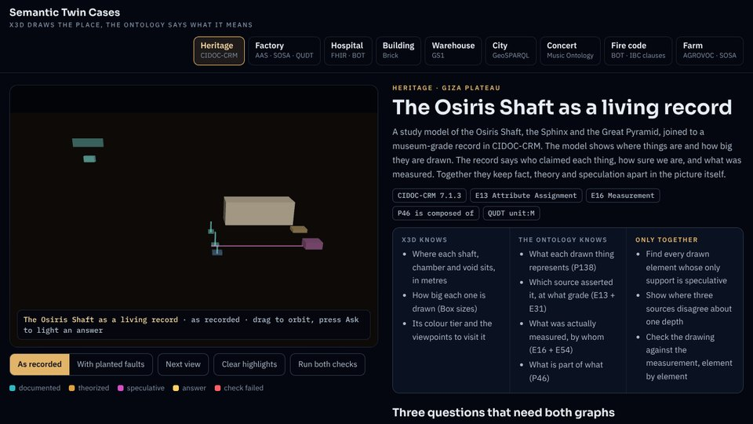
Nine cases (heritage, factory, hospital, building, warehouse, city, concert, fire code and farm) where an X3D scene and an open ontology answer questions neither can answer alone. Each case asks three questions, runs one rule and catches two planted faults: press “With planted faults” and “Run both checks” and the failing elements light up. The browser engines (SPARQL, SHACL and rules, in the page) match the Python oracle on 90 of 90 runs. Every case lists what X3D knows, what the ontology knows and what only the two together can say. Version 2 puts an evidence state on every question, rule and check (the Python oracle recomputed, the x3d_mcp server today, and the stored x3d_mcp run of 16 Nov), with a count per case: 162 computed in the page, 60 recorded, 13 explained differences (the stored server run lost ORDER BY in 13 of 54 ordered answers, with the rows right), 1 hash checked, 2 not packaged and 0 mismatches. Where a query orders its rows, the browser’s answer must match the oracle in order too. Version 1 is unchanged.
Needs WebGL2 (X_ITE bundled with the page). The 90 of 90 figure compares the page’s engines with the Python oracle (its runs are in the page’s data folder); the heritage case is a study model, not a survey. Not on main when this card was written: the demo is in x3d.demo PR 40 and this card points at its path.
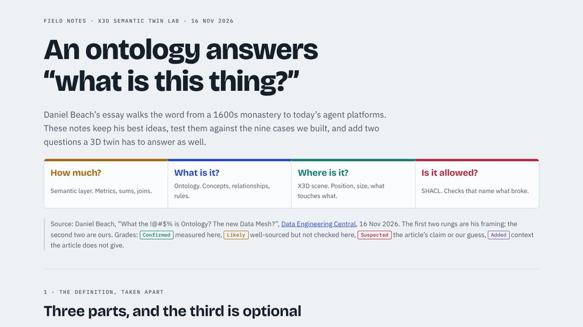
Daniel Beach’s essay “What the !@#$% is Ontology?” (Data Engineering Central, 16 Nov 2026) walks the word from a 1600s monastery to today’s agent platforms. These notes keep his best ideas with credit and short quotations only, test them against the nine twin cases, and add two questions a 3D twin has to answer as well (where is it, is it allowed). The layer test: on questions and rules the records alone answer 27 of 36 and both graphs answer 36 of 36; on planted faults the records alone catch 5 of 18 and both catch 18 of 18. Every claim is graded Confirmed, Likely, Suspected or Added.
A reading page with no 3D pane. The essay is Daniel Beach’s; the notes are an independent commentary, not endorsed by him or by Data Engineering Central. The layer-test counts come from the nine cases of Demo 35. Not on main when this card was written: the page is in x3d.demo PR 40 and this card points at its path.
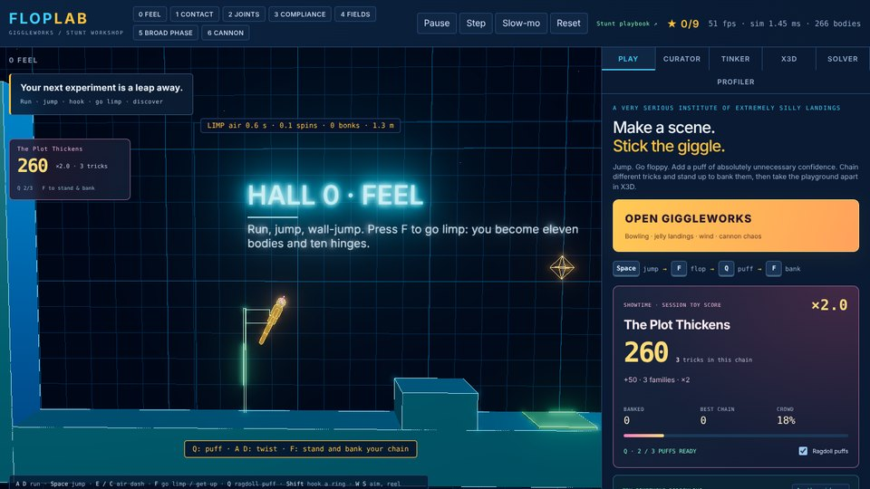
A 2.5D ragdoll stunt platformer whose whole playground is an editable X3D 4.0 file (255 RigidBody nodes and 182 joints in the main level), stepped by a custom XPBD-style solver written in JavaScript and drawn by the three.js bridge. Run, jump, hook a ring, then press F and the runner goes limp: eleven bodies and ten hinges. Chain different tricks, puff with Q, and stand up to bank the chain for the Showtime toy score. Seven teaching halls (Feel, Contact, Joints, Compliance, Fields, Broad phase, Cannon) and six expedition challenges sit beside a bench of tabs (Play, Curator, Tinker, X3D, Solver, Profiler) that lets you drop parts into the world, edit the X3D and watch the solver.
Lives in its own repository (x3d.gamelab), not in this one; the picture is the project’s own screenshot (docs/media/flop-midair.png). Needs WebGL2 and a keyboard (A D, Space, E or C, F, Q, Shift) or a gamepad; no WebGPU. Checked by the game’s thread on the live URL with headless Chromium 153.0.8010.12 on a software adapter: no console errors and no 4xx; the page here has not re-run it. The score is a playful session score, and medals are local game goals, not physics certification.
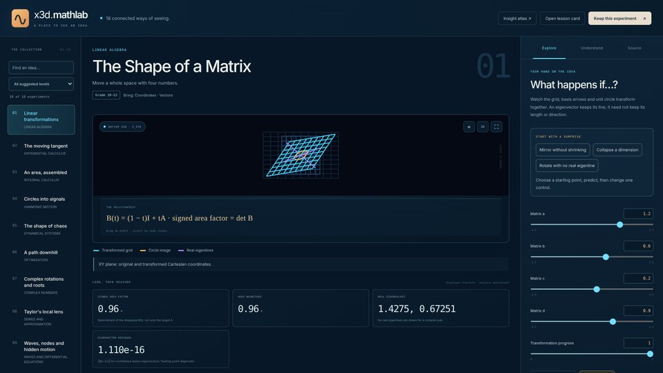
Eighteen interactive X3D math labs on one page, from linear maps (move four matrix numbers and watch the grid, basis arrows and unit circle turn together), the moving tangent, an area assembled piece by piece, circles that add up into signals and the shape of chaos, to complex rotations and roots, Taylor’s local lens, waves, probability becoming a bell, least squares as a shadow, divergence and curl, SVD, Bayes and base rates, Lagrange multipliers, aliasing (“the camera can make time lie”), heat erasing small scales and Fermat’s principle of least time. Each lab is a native X3D scene drawn by X_ITE, built in your browser by Python running under Pyodide, so there is no server. You can search the lessons and filter them by suggested level (grade 10 to 12, undergraduate 1, undergraduate 2 to 3). The first lesson shows the relationship it draws, the measured numbers (the determinant and an eigenvector residual), starting points that surprise (“mirror without shrinking”) and a question to answer before the reasoning is revealed. “Export this world” downloads the scene as .x3d, and a Manim source export is offered (the Manim render itself stays on your machine).
Lives in its own repository, not in this one; the picture is a headless screenshot of the live page (Chromium, software GL). Needs WebGL2 and downloads Pyodide 0.27.7 on first load. A check here loaded the live page, counted 18 lessons in its list and opened the first one with no console errors; the other seventeen were not opened.
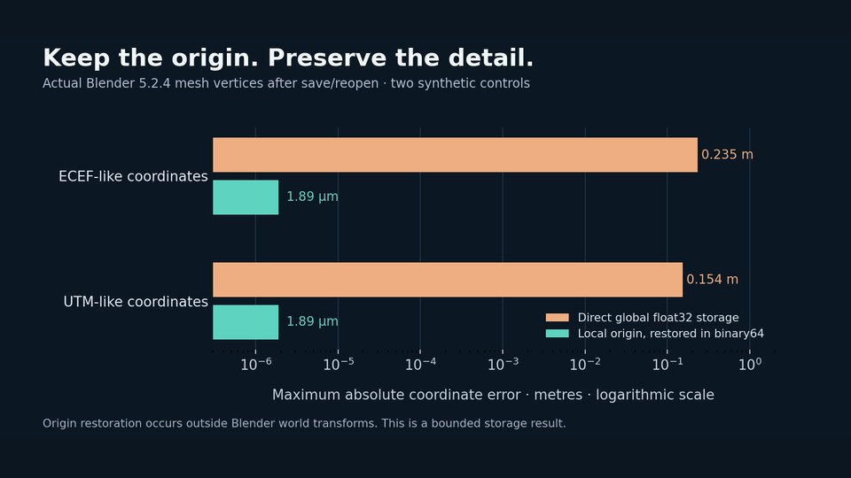
A one-page summary of two checks from the sci-vis integration review. First, float32 storage against a binary64 origin: Blender 5.2.4 LTS saved and reopened two synthetic metric frames and the vertices were compared with an independent binary32 reference. Stored directly, an ECEF-like frame loses 0.2345 m at most and a UTM-like frame 0.1543 m; stored locally with the origin restored in binary64 outside Blender, both lose about 1.89 micrometres. The boundary is stated: moving the object back to a very large world translation can bring the loss back. Second, a probe of Blender 5.3.0’s native Gaussian splats on four asymmetric SH3 PLY splats, where Apply Transform changed the represented covariance (a deliberately kept loss), and what was not established (renderer PSNR, large-splat scale, SPZ quality, a CI matrix). It also lists the tests behind the fold-back: 13 inventory adapter tests and 8 figure-link adapter tests pass, and 5 provenance-escape tests pass with a one-line fix and 4 fail without it.
A static page, no WebGL. Every number is reported from the review’s own receipts and was not re-run for the page or the card, and the page was not browser-checked by its author; the card picture is the chart from that page. Hash identity is not publisher authentication, and a passing probe that reproduces a transform loss is not a preservation claim. The page arrived with x3d.demo PR 49 and is on main.
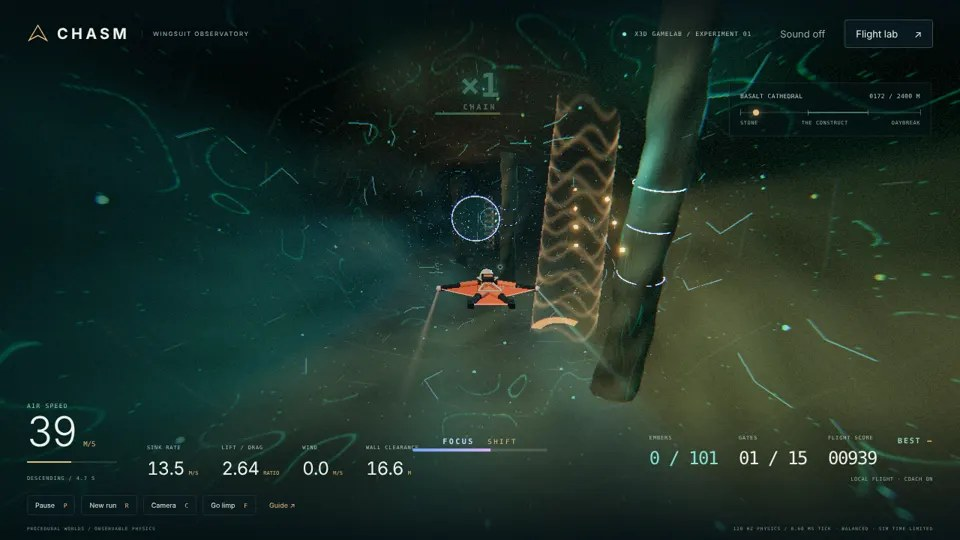
Fly an articulated ragdoll pilot down 2.4 km of descending natural and virtual caverns, with air-relative flight physics: bank with A and D, dive with W, flare with S or Space, and go limp with F. Version 2.0 adds rock columns and neon light-bars to dodge, thermal updrafts, collectible embers, a ×8 chain multiplier that impacts break, a slow-motion focus meter, medals, a ghost of your best run and a new visual-effects layer. A route coach is on by default and can fly the line for you. The game is built on the pinned three.js closure in x3d.gamelab and exports a static X3D snapshot of the world.
Lives in its own repository (x3d.gamelab, merged in its PR 1), not in this one; the picture is the project’s own still cavern/docs/media/chasm2-stone.webp (960 x 540, from a software-rendered run). Measured by the game’s thread and reported here, not re-run: the built-in route coach goes from 7 of 15 gates to 14 of 15 with no impacts; 23 of 23 Node tests pass on Node v22.23.5; the X3D snapshot passes pinned x3d_mcp b5c9956 (XSD and semantic); 18 of 18 browser checks pass on Chromium 153.0.8010.12 with SwiftShader. I loaded the live page once in headless Chromium for this card: the title is “CHASM · Wingsuit Observatory” with no console errors and no 4xx, and I did not fly it. It has not been played on a GPU or by a human yet, and the flight model is a game, not a certified simulation. Lessons: x3d.loom PR 94 (LEARNINGS-chasm.md).
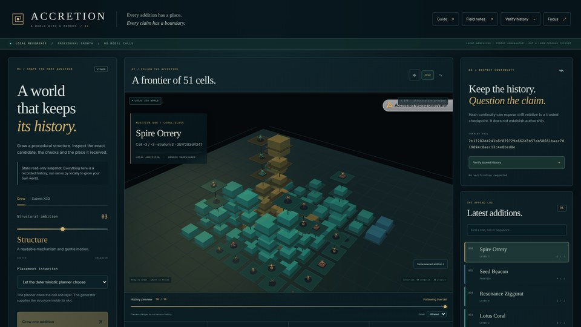
A static, read-only viewer of a procedural X3D world that grew one addition at a time: 96 entries in a hash-chained, append-only history, drawn in X_ITE as a frontier of 51 cells. Orbit or fly the world, drag the history slider back through every addition, search the append log by title, cell or sequence, and use Verify history to re-check the stored chain in your own browser. Each addition shows its place, its checks and its candidate. The controls that would grow the world are switched off in this snapshot; running the project’s serve.py locally grows a world of your own.
Lives in its own repository (x3d.accrete), not in this one. The picture is a headless screenshot of the live page (Chromium, software GL, 1600 x 900 scaled to 960 x 540), taken for this card; the small yellow label in its top right is X_ITE’s own view notice. The 96 entries, the re-verification in the browser and “no model calls” are the project thread’s report; I loaded the page once and saw no console errors and no 4xx, and I did not press Verify history. The page itself says the render is unmeasured and that hash continuity can expose drift against a trusted checkpoint but does not establish authorship; this is a local reference and not a Loom release receipt.
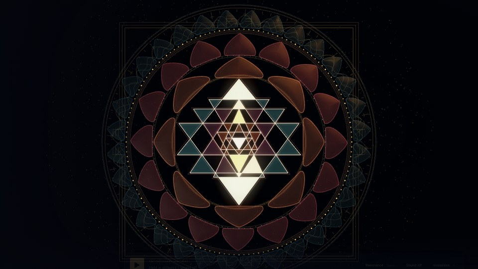
A nine-triangle Sri Yantra drawn as live geometry in native X3D, with its forty-three triangular chambers each tuned to ring like a bell when you touch them. The page describes the figure as a concentric Huet family of 43 triangles with canonical coordinates held fixed while colour, light and whole layers breathe. Sound begins only when you choose it: awaken it, then touch any chamber, and headphones reveal the stereo detail. A geometry witness page and a studio view sit alongside, and the page has an immersive mode and a Resonance control. Version 2.0.0 is the live page and version 1.0.0 is kept as delivered.
Lives in its own repository (x3d.mathslab, yantra/), not in this one; the picture is the project’s own still x3d.mandala/docs/media/harp-2.0-strikes.png from x3d.loom, cropped and scaled to 960 x 540. Drawn by X_ITE 16.8.0 (the version the page names). The geometry claims (43 triangles, source error under 10-12 of the radius) are the page’s own and were not re-checked for this card; the page labels the layers “geometry audited, ornament authored, peer field synthetic”, so the colour and ornament are artistic choices, not part of the measured geometry. I loaded the live page once in headless Chromium (title “ŚRĪ · Resonance Loom”, no console errors, no 4xx) and did not listen to it, so the sound is unchecked here. The still is not a render of the page’s current frame.
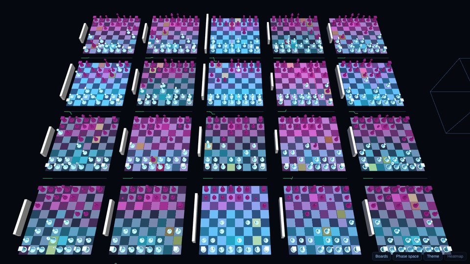
A spectator for twenty chess games at once, all drawn as one X3D scene in X_ITE: 640 pieces on 20 boards. Click a board to fly to it and open its game panel with the eval, ply and move list; the arrow keys step between boards, Escape pulls back, and Phase space tilts the whole grid into another view. Heatmap (key H) washes each board in a colour field, and Theme (key T) cycles the look. By default the games are a replay driven by a material-count proxy, so the page starts instantly. Add ?engine=wasm to the address and the boards are played live by Stockfish running in your browser (search depth 12 unless you set depth), with the skill level cycling from board to board; boards, seed and interval are also read from the address.
Lives in its own repository (x3d.chess), not in this one; the page calls itself a scaffold. The picture is a headless screenshot of the live page in the replay mode with the heatmap on (Chromium, software GL, 1600 x 900 scaled to 960 x 540). I loaded the page in headless Chromium: the default load shows “20 boards · 640 pieces · 60 moves · replay (material proxy)” with no console errors and no 4xx; a click on a board opened its game panel; with ?engine=wasm&boards=4&depth=6 the status line reached 124 moves in twenty seconds with no errors. I did not run the 20-board Stockfish mode at depth 12, so how fast or how heavy it is on a real machine is untested here. No native-engine numbers exist yet, the replay eval is a material proxy and not an engine evaluation, and the game strength is not measured.
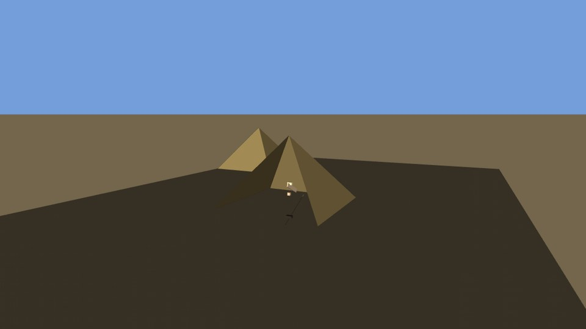
A phone AR experiment. Open the page over HTTPS, press Start AR, allow camera and location, and a cutaway Great Pyramid, authored as an X3D 4.0 file, is stood over each Masonic building that OpenStreetMap lists within 2 km of you. The model has Khufu with its south face removed and schematic chambers, a gallery and a descending passage, plus Khafre and Menkaure shells; a slider rescales the overlay, and the page shows the great-circle distance and bearing to Giza and the current sun position. It uses AR.js location-based AR on A-Frame, and a small X3D reader so the same file is drawn there and in X_ITE. Only public building names and positions are used, with no member data, meeting times or rituals. This card now opens version 2, which fixes the desktop preview (the X3D file has a viewpoint, a sky and a ground, and the X_ITE window is sized); version 1 is kept unchanged.
Not tested on a real phone, and not tested against the live OpenStreetMap (Overpass) query, so how it behaves with real GPS, a real compass, iOS Safari or real lodge data is unknown. What has run: the X3D files passed the XSD 4.0 check (x3d_mcp fa5dccf, as reported in the changelog and readme), and I re-ran version 2’s synthetic Test points mode in headless Chromium with a fake camera and a mocked position: 4 of 4 test entities created and 4 of 4 model overlays attached, no console errors; its desktop preview also loaded with no console errors and a 726 by 320 pixel X_ITE window. Those four points are synthetic and are not real buildings. GPS drift is typically 5 to 20 m outdoors, so an overlay is anchored to the lodge coordinate and not to the facade. The picture is a headless screenshot of the page’s own opening preview (cropped to 16:9), not an AR view. Interior positions are schematic.
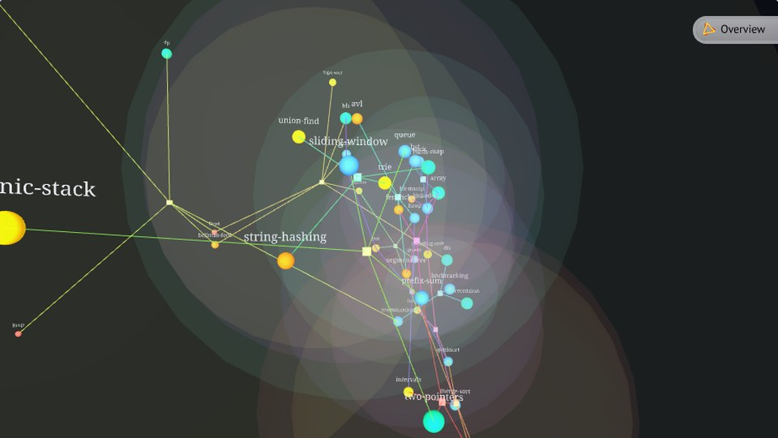
A knowledge graph in four dimensions, drawn in X3D. Forty data-structure and algorithm concepts are points in x, y, z and w, where w is a difficulty tier from S to D; fifteen hyperedges each join four to seven concepts at once, drawn as a hub with spokes inside a translucent bound. Rotate the three planes that involve w (XW, YW, ZW) to trade difficulty for space, or let it auto-spin; the page projects 4D to 3D with a smooth perspective. Drop to a 3D or 2D lens, pick a concept to see its hyper-neighbours, toggle hyperedges from the table, or swap to clique expansion to see what an ordinary pairwise graph does to a hyperedge: here 73 incidences become 138 distinct pairs, 1.89 edges per incidence. Version 2 overlays 48 chess openings (boxes, w = ECO volume A to E) and 8 chess-engine concepts (cones) on the same 4D space, for 96 concepts and 36 hyperedges, with five bridge hyperedges that join the two worlds (for example, transposition is memoization by hashing); a layer switch shows DSA, Chess ECO or both. Version 1 is kept unchanged.
A proof of concept answering a hypergraph visualization RFC for a DSA tutor. The concepts, tiers and hyperedge membership are an illustrative set authored for it, not the tutor’s database (the RFC gives a schema, not rows), and the layout is a seeded force relaxation with w pinned to tier. The page’s notice reports the X3D file valid against the 4.0 XSD (x3d_mcp fa5dccf) and a headless run with 40 of 40 concepts and 15 of 15 hyperedges resolved. I loaded the live page in headless Chromium: 15 hyperedge rows, 41 concept options and a stats table, no console errors and no 4xx, and the 2D lens and clique buttons ran without error; I did not check the numbers beyond reading them from the page. Not done, per the notice: real mouse selection through the scene, any GPU, Firefox, Safari or phone run, and the RFC’s backend and learning-path features; the hyperedge bounds are spheres, not convex hulls. The picture is the project’s own preview of the default 4D view of version 1, cropped to the 3D window. Version 2’s notice says its ECO names are cross-checked against a published opening list only for the major families (the minor ranges are from memory, Likely, not Confirmed), that the groupings and the five bridges are the author’s judgement, that labels overlap where the ECO boxes cluster, and that there is no real game data, so nothing in it ranks openings. I loaded version 2 on the live site in headless Chromium: 36 hyperedge rows and 97 concept options, no console errors and no 4xx, and the 2D lens and clique buttons ran without error; the notice’s counts (96 concepts, 36 hyperedges, 233 incidences) were read, not recomputed. Version 3 (PR 75, linked above) rebuilds the openings from a real table instead of the hand-authored set: all 500 ECO codes (A00 to E99) with their 3,865 named lines from the Lichess chess-openings table (CC0, commit 3ba6b20, copied unchanged), 548 points and 99 hyperedges, drawn with Babylon.js 9.37.0 rather than X_ITE; its X3D file (X3D 4.0) is a static pose of the same positions with family and bridge labels only, not the interactive scene. Its notice reports that file valid against the X3D 4.0 XSD (x3d_mcp fa5dccf), 831 transposition events found by replaying the lines with python-chess (40 shown as meeting points, 6 spanning ECO volumes; Confirmed as computed there, and only positions reached inside the named lines), and a headless run with a real mouse hover and click on C60. I loaded version 3 locally in headless Chromium (SwiftShader software GL, 1500 x 900): 548 nodes and 99 hyperedges loaded, a hover and click selected C60 and the panel drew a 64-square board, with no console errors, no 4xx and no horizontal scroll. The first-move groups, DSA concepts, tiers, engine concepts and bridges are the author’s judgement, not a published taxonomy. Not done, per the notice: no frame-rate or GPU measurement, and no hardware GPU, Firefox, Safari or phone run; there are no game statistics, so nothing ranks or recommends openings. The card’s picture is still version 1’s.
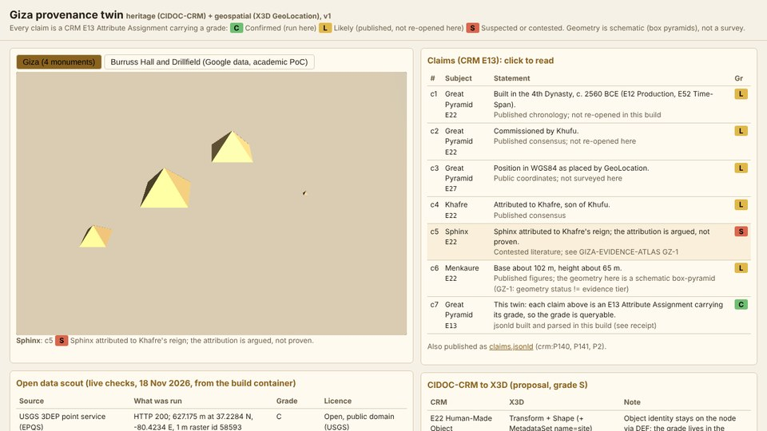
Two scouting scenes for putting heritage claims and real places in X3D. The Giza tab places four monuments with the X3D Geospatial GeoLocation node from their public coordinates, and every statement about them is a CIDOC-CRM E13 Attribute Assignment carrying a grade: C for confirmed here, L for likely (published, not re-opened here), S for suspected or contested. Click a monument or a claim to read it; the seven claims are also published as JSON-LD. The Burruss Hall tab places a real university building and its Drillfield by reusing a surface model by Inline. The page also lists eleven open-data sources with what was actually run against each, and proposed mappings from CIDOC-CRM, CityGML, IFC and GeoSPARQL to X3D, with three traps found along the way (GeoLocation content needs no extra rotation for Y-up, metadata must be the first child in the 4.0 XSD, and X3D geographic coordinates are latitude first while GeoJSON and WKT are longitude first). Version 2 re-places the monuments from Pleiades identifiers, reconciles the elevation question, and adds an IFC placement row. Version 1 is kept unchanged.
The Giza geometry is schematic box pyramids, not a survey, and the ground is a flat placeholder because no Egyptian terrain was fetched. The page’s readme reports both scenes valid against the X3D 4.0 XSD (x3d_mcp fa5dccf), though its receipt file covers the Giza scene only. I loaded the page locally in headless Chromium: seven claims, eleven source rows and the mapping tables rendered, a click on the Sphinx claim showed its suspected grade, and the Giza and Burruss tabs both loaded with no console errors and no 4xx. Not done, per the readme: no Egyptian terrain, no IFC to X3D conversion of the building, no GeoSPARQL endpoint, no timing, no cross-browser run, and the OpenStreetMap service was unreachable from its build container. Version 1 left open a USGS elevation of 627.175 m at the Burruss point against 617 m used by the reused Drillfield model; version 2’s readme reports it is not a datum conflict: the median of the USGS elevation minus (617 m plus the Drillfield surface model) is +0.03 m over 140 points (Confirmed numbers), and 627.175 m is one point on a slope. That reading is Suspected, not Confirmed: it rests on a tile centre the author assumed (37.2284, -80.4234) and on a correlation of only 0.51 between the two surfaces. The readme also reports that version 1 had typed the Khafre and Menkaure positions from memory and put them 208.3 m and 64.1 m from their Pleiades points (Confirmed). Version 1’s Khafre and Menkaure placements are therefore superseded by version 2’s. Version 2’s IFC row is authored, not read from the model (the Confluence IFC file has null placement fields), and its UTM numbers were not checked against PROJ. I loaded version 2 locally in headless Chromium: its page rendered nine claims and eleven source rows, with both tabs loading and no console errors; I did not re-run its elevation or Pleiades checks. The Burruss tab reuses Google Solar API imagery for an academic, non-commercial proof of concept only, so its imagery is deliberately not used for this card’s picture, which is a screenshot of the Giza tab.
Each of the eighteen Math Lab lessons is linked to terms in five published vocabularies (OntoMathPro in English and Russian, OpenMath, MathML 3 content markup, PhySH and two OEIS sequences), and every link is a graded claim: C for confirmed (an exact match whose id and label were fetched live), L for likely, S for suspected (a translation guess, an analogy or a false friend). The scene draws the lessons as spheres and the cited terms around them; click a lesson or a table row to read its links, its arXiv title-hit count and its confirmed gaps, or switch the C, L and S links on and off. The page also lists where the vocabularies run out: 26 confirmed negatives, each with the search that found nothing, and a table of each source’s licence and how it may be ingested. In all there are 90 links (40 C, 39 L, 11 S) to 88 distinct terms, also published as JSON-LD. Version 2 corrects version 1: it found classes that version 1’s one-label read missed (for example it refutes the “no OntoMathPro wave equation” gap), and the page carries an errata card. Version 3 adds a Wikidata Q-id for every lesson and a check sheet that tests the cited Russian OntoMathPro labels against Wikidata’s own labels.
The counts above are version 2’s own, from its build run on 18 Nov 2026; I did not re-fetch the vocabularies or re-run the searches. Its readme reports the scene valid against the X3D 4.0 XSD with no semantic errors (x3d_mcp fa5dccf; 127 info notes for unused DEF names), the JSON-LD parsing to 1,363 triples in rdflib 7.6.0, and 88 distinct terms verified live. I loaded the page locally in headless Chromium (Playwright, SwiftShader software GL, X_ITE 16.6.0, 1300 x 900): 18 lesson rows and 26 gap rows rendered, a pick on the Bayes lesson listed four links and two confirmed gaps, switching the S links off hid them, and there were no console errors. The readme lists what was not tested: no GPU or WebGPU, no mobile, no X_ITE other than 16.6.0, definitions marked “not opened” were not read, the Russian labels were read by a model and not by a Russian reader, and the arXiv counts are a crude title-only regex over a three-category window. Licences as the page’s notice states them: the OntoMathPro crawl behind version 2 is held privately and is not redistributed (the page and the repository carry only ids, short labels and superclass chains of cited terms, and the site has no licence text); OpenMath content definitions allow verbatim redistribution and only symbol names are cited; MathML 3 follows W3C document use and only element names are cited; PhySH is CC0 and its name is used for attribution only; the names of two OEIS sequences (Pascal and central binomial) are used under CC BY-SA 4.0 and attributed to the OEIS (https://oeis.org); arXiv appears as counts and identifiers only. Version 1 stays open from the chip above; its numbers (69 links, 67 terms, 27 gaps, 895 triples) are not the current ones. The picture is the version 2 page’s own preview, cropped to the 3D window. Version 3 (x3d.demo PR 78, now the page the first links open; versions 1 and 2 stay linked) keeps version 2’s 90 links, 88 terms and 26 gaps and adds Wikidata Q-ids for all 18 lessons (15 exact matches and 3 close: waves, refraction and probability) and a Russian-label check of 50 cited OntoMathPro terms (12 of them Russian-only) against Wikidata’s Russian and English labels. Its readme reports that Wikidata agrees for 19 of the 50, a search hit only for 7, no cross-check for 24, and that 4 Russian-only terms (E1523, E2021, E2855, E2924) still need a human reader; the Russian-only readings were made by a model, so “agrees” does not replace a Russian reader. Wikidata was rate-limited during the run and search hits are not ground truth. It also reports the scene valid with no semantic errors (x3d_mcp fa5dccf) and the JSON-LD parsing to 1,426 triples in rdflib 7.6.0, none of which I re-ran, and the counts above are its own. I loaded version 3 locally in headless Chromium (SwiftShader software GL, X_ITE 16.6.0, 1300 x 900): 18 lesson rows, 26 gap rows and the 39-row Russian-label sheet rendered, a pick on the Bayes lesson listed four links and two confirmed gaps, and there were no console errors, no 4xx and no horizontal scroll. Licences: Wikidata is CC0 1.0; the full OntoMathPro, OEIS and arXiv crawls are held privately and not redistributed, and only ids, short labels, counts and the two attributed OEIS names (CC BY-SA 4.0) are published; the other sources are as stated above. Not tested, per the readme: GPU or WebGPU, mobile, and term definitions marked “not opened”. The card’s picture is still version 2’s.
An educational proof of concept, not medical advice and not a medical device. A public CT torso and a brain template are drawn in X3D, and every organ carries its provenance as metadata: the Foundational Model of Anatomy (FMA) class it was matched to, Uberon, Wikidata, a SNOMED CT concept id, MeSH, an H-Anim segment and a BodyParts3D id. Each of the 913 claims is graded C (checked in the build, instrument named), L (third-party or earlier, not re-checked) or S (judgement or a scope doubt). Switch between the torso (111 structures) and the brain (10 deep structures), filter by name, FMA or SNOMED id, group or grade, pick a structure to see where it sits and read its claims, and read twelve graded findings and a table of what is built against what is only proposed. The claims are also published as JSON-LD.
The counts above (121 structures, 120 with an FMA class, 78 SNOMED CT ids, 37 H-Anim names, 913 claims split 551 C, 284 L and 78 S) are the page’s own, from its build on 18 Nov 2026; I did not re-run its lookups. Its readme reports both scenes valid against the X3D 4.0 XSD (x3d_mcp fa5dccf). I loaded the page locally in headless Chromium: 111 torso rows, the brain tab with 10 rows, a structure pick showing its claims, no console errors and no 4xx, and no horizontal scroll at 1280 px. A grade C means this build checked it, not that an anatomist approved it, and there was no anatomist review. Not done, per the readme: no CT volume or DICOM, no BodyParts3D meshes (only parts lists), no H-Anim humanoid with joints, and no GPU, Firefox or Safari run; picking in the 3D view itself was not tested, only selection through the table. The brain is a template whose fit to the torso is illustrative. Licences as the notice states them: the torso is the TotalSegmentator example subject s1397 (Wasserthal et al. 2023; the dataset record says CC BY 4.0), with changes made; FMA ids and labels are used under an unsettled licence (graded S), so only ids and labels appear; SNOMED CT appears as bare concept ids only, from Uberon cross-references, and SNOMED International licensing applies to the content, so whether bare ids may be shown was not settled; Uberon is CC BY 3.0; BodyParts3D credits CC BY 4.0 on its newer licence page while an older page says CC BY-SA 2.1 JP, a conflict the notice flags; the H-Anim names come from the X3D 4.1 schema. The picture is the page’s own screenshot, cropped to the 3D view. Version 2 (PR 70, linked above, same licences) adds FMA is-a ancestors with a class filter and an in-page check that the running scene’s metadata equals the claim file, which its readme reports as 111 of 111 with a tamper caught (Confirmed by its own build, not re-run by me); its readme counts 1,033 claims (671 C, 284 L, 78 S), where the counts above are version 1’s. I loaded version 2 locally in headless Chromium: the page rendered with no console errors, no 4xx and no horizontal scroll at 1280 px; I did not exercise the class filter or the tamper demo, and the card’s picture is still version 1’s screenshot. Versions 3 to 6 (linked above; version 4 is PR 74, version 5 PR 77, version 6 PR 79; all educational, not medical advice) go further, and every figure below is the page’s own build report, not re-run by me. Version 3 hashes each shape’s claim list (SHA-256) into its scene and recomputes the digests in the page, reporting 111 of 111 matching and a changed claim caught. Version 4 is a real H-Anim humanoid with 35 joints and 35 segments built from the CT bones, reported valid with 0 errors, joint estimates graded S, with the ribs, sternum and costal cartilage drawn outside the humanoid because H-Anim has no segment name for them; it has no skinning and no joint limits. Version 5 fits open BodyParts3D meshes to 100 of the 110 torso structures that have an FMA class and compares them with the CT surfaces; its reported agreement is close (under 15 mm) for 27, partial for 56 and far for 17, a comparison of two different people’s anatomy and not an error measure for either, and its licence note flags a CC BY-SA 2.1 Japan header against a CC BY 4.0 licence page and ships the derived meshes under the stricter reading. Version 6 turns one open TCIA series (Pancreas-CT, CC BY 3.0, 185 slices) into X3D VolumeData and SegmentedVolumeData on a 128 x 92 x 128 resampling, with the provenance in the scene and ten graded claims (5 C, 2 L, 3 S); its density bands are not an anatomical segmentation, and it reports an XSD gap that stops OpacityMapVolumeStyle transfer functions validating. So the “no CT volume or DICOM” line above is version 1’s, not version 6’s. I loaded versions 3 to 6 locally in headless Chromium (SwiftShader software GL, 1280 px): each rendered its tables (141, 70, 100 and 10 rows) with no console errors, no 4xx and no horizontal scroll; I did not exercise the tamper checks, the poses, the overlays or the volume scenes, and software GL gives no frame-rate or GPU evidence. The card’s picture is still version 1’s.
A multi-scale tile pyramid for the Burruss Hall and Drillfield area, built three ways: native X3D GeoLOD (132 tiles from zoom 7 to 15, each a GeoElevationGrid mesh), the same pyramid as a 3D Tiles 1.1 tileset with GLB content, and a converter that turns that tileset back into X3D GeoLOD nodes. The page has two tabs (native and converted), six GeoViewpoint buttons from 300 m up to space, a 90-second zoom-out tour driven by X3D interpolators, and a live count of the tile files fetched at each zoom level. Every refinement range comes from one stated rule: range = geometricError x 81.48, taken from the 3D Tiles screen-space-error rule.
Imagery. The linked page’s satellite textures are Google Map Tiles API imagery, used under the owner’s decision of 18 Nov 2026 for an academic, non-commercial proof of concept only; Google’s terms govern them, the notice calls the committed copies a risk the owner accepted and not a cleared licence, and it says to keep them off the front page. So this card’s picture is not a tile: it is the page’s own globe (NASA Blue Marble, public domain), screenshotted with the satellite tile requests blocked and the 20 zoom-7 tiles switched off, so only the NASA texture is drawn. The picture therefore shows none of the pyramid. The readme says a build with --open-textures replaces every Google tile with a hillshaded tint made from open terrain heights; that is the route for publishing beyond the proof of concept. Heights are AWS Terrain Tiles (SRTM, USGS 3DEP and others, open data, attribution in the notice). Google’s Photorealistic 3D Tiles are not included. Checked. The readme reports 266 native X3D files and 177 converted ones valid against the X3D 4.0 XSD with no errors (x3d_mcp fa5dccf), and the pyramid streaming from zoom 7 to 14 around Blacksburg in about 25 seconds at 4.5 km on X_ITE 16.6.0 with software rendering, at 4 to 5 frames per second, dropping to 0.5 frames per second with the Drillfield surface model in view. I loaded the page locally in headless Chromium: the space view fetched 72 tile files at 6.5 frames per second with no page errors, and the converted tab loaded with no console errors and no 4xx. I did not re-run the validation, the tour, the Burruss close-up or the converter. Not done, per the readme: no real GPU, other browsers or phones, no run of the converter on real Google GLB bodies, and not tested on the live site. Known gaps: no skirts, so hairline cracks appear where neighbouring tiles differ in level; refine ADD is treated as REPLACE; tiles with no finer source are upsampled leaves; the heights are 10 m class terrain data, not lidar. The readme calls this a candidate Demo 47; the number on this page is 49.
An X3D observatory for the Gobbler flywheel idea: a failure in one world becoming a capability in the next. The Gobbler agent carries twelve feathers, one for each proposed domain (Ontology, ML, Maths, STEM, Gameplay, Game development, Physics, Music, Data intensity, Heritage, Blender IO hub and Architecture), and the loom beneath it carries memory. Three panels sit beside the scene. Evidence shows the counts recorded from a pinned archive and what fraction of the numbers has an archived verified quotation; Foldback plays a four-step synthetic teaching replay in which a shader-source incident becomes a guarded technique for a music world; Find searches the pinned knowledge graph. Each feather shows what it takes in, what it returns, and a possible cross-domain bridge, all labelled proposed.
The page is hosted in the x3d.gobbler repository, not in this one, so these links leave this site. The counts it shows are 2,181 entities, 7,222 typed edges and 44 laws in the Atlas, and 34 of 591 numbers with an archived verified quotation; the page itself says a quotation confirms what was written and that repeating the experiment is a separate witness, and that the domain transfers remain proposed. Its feather motion and particles are illustrative and independent of measured activity. The lane reports 52 unit tests and 11 offline checks passing, the Atlas witness 19 of 19 (rdflib 7.6.0, x3d_mcp fa5dccf) and its browser check 15 of 15 on the observatory and the single-file edition (Chromium 153, software GL), on commit 4a24d4b; none of that was re-run by me. I loaded the live page in headless Chromium (1440 x 900, software GL): it reported “Archive snapshot · 12 proposed domains”, showed the three counts above and 34/591, showed “Build: 8/8 recorded hashes match”, and the Foldback tab listed four steps; there were no console errors, no 4xx and no horizontal scroll. The single-file edition answers 200 but I did not open it. Not tested, per the lane: a hardware GPU, Firefox or Safari, phones, audio. The Intervention Lab (evidence-lab/) is a separate, later piece from another lane and is not described or tested here. No third-party imagery: the picture is the page’s own receipt screenshot (a software-GL render of its X3D scene), cropped to the 3D view.
One night at Giza in five acts, as a 216-second guided film you can stop and walk around in, drawn with Babylon.js 8.56.2. It merges four earlier editions: the v3 Evidence Atlas, the Hawara Witness Atlas v4.1, Giza IV Horizon Engine and Giza V Earth’s Tesla Coil. Every caption line, mesh and ledger row carries a mark: Confirmed, Likely, Suspected, or Authored. Authored means invention for the story and is not a truth grade. Acts I and V are the measured stone and the real star sky, and Act II is the Osiris Shaft and Hawara; Acts III and IV, the ghosted Khufu with an authored king, ankh and Was-sceptre and the imagined planetary coil with its arcs, are fiction and are marked Authored throughout. A ledger of 33 claims lists the sources, and an X3D 4.0 twin of the same vertices opens with the Authored layers hidden.
The figures below are the page’s own validation report (VALIDATION.md, 18 Nov 2026), not re-run by me except where stated. It reports the X3D 4.0 twin valid against the XSD with 0 semantic errors and 0 warnings (x3d_mcp fa5dccf), 40 meshes by grade of 14 Confirmed, 12 Likely, 4 Suspected and 10 Authored, 11 of 11 offline tests passing, and, for the packs shipped beside it, 17 of 17 tests for v4, 38 of 38 plus 8 for IV and 58 of 58 for V. Two of those packs’ scenes are not clean: IV’s scene has 3 semantic errors and V’s has 7 (a MetadataString without containerField="metadata"), kept as authored; v4, IV and V were placed unchanged except for two path edits in IV’s test scripts. The published measurements it shows (Khufu base 230.33 m, 138.5 m today; Khafre 215.25 m and 136.4 m; Menkaure 103.4 m and 61 m) come from the v3 geo table, and the pyramid positions are rounded published centre coordinates, not a survey. The Giza to Hawara distance is 81.6 km on a great circle, where the Hawara pack said roughly 90 km, and the page says which. The star sky is the HYG catalogue precessed from 10,500 BCE to 2000 CE; it has no proper motion or refraction, and the Milky Way points follow the real galactic plane but their brightness is invented. In Act IV the energy ledger (a 12.5 GJ bank, 20.66 s to drain with the supply off) is arithmetic inside the fiction, not a claim that any such machine exists; the notice states no survey, no radar or thermal data, no electrical generator and no alien or divine machine is claimed. I loaded the page and its X3D twin locally in headless Chromium (software WebGL, SwiftShader): both loaded with no console errors and no 4xx and no horizontal scroll at 1280 px, and the page’s own report showed Babylon 8.56.2 at the balanced tier; I did not watch the film, open the ledger, click through the acts, or count the twin’s viewpoints. Not done, per the report: nothing was measured on a real GPU (its frame rates on software GL mean nothing about a GPU) and the page uses WebGL 2 only; other browsers were not run; the owner’s machine blocklists WebGPU. Licences as the notice states them: Babylon.js 8.56.2 Apache-2.0; X_ITE 16.6.0 with its own licence; the star catalogue is HYG v4.1 under CC BY-SA 4.0; the page’s own code, geometry and story are original to this repository; the monument coordinates and the Hawara distance come from Wikipedia pages opened on 18 Nov 2026. No third-party imagery: the picture is the page’s own screenshot of Act I, cropped. This card is the first on the shelf for the Giza family; versions 1 to 3 were never carded and are linked above.
Sixteen ideas from the D3 and D3Blocks chart gallery (heatmap, chord, treemap, moving bubbles, force graph, Sankey, scatter, time series, elastic graph, circle packing, violin, image slider, radial graph, tree, maps and particles) re-expressed as X3D 4.0 scenes in which the third dimension does real work: a heat terrain whose height repeats the colour, a chord dome whose ribbons arch by the square root of the flow so crossings separate in height, a treemap city, a space-time cube, a Sankey canyon, a globe beside its flat Equal Earth projection, and more. D3 computes every layout once, at build time in Node, a small emitter writes the X3D, and X_ITE draws it. One chart, the elastic graph, runs d3-force-3d live in the page and moves X3D Transforms through the scene access interface on every tick, so D3 owns the physics while X3D owns the light and the navigation. The page has a gallery, three or two viewpoints per scene (one is the flat 2D view), the D3 modules used and what the third dimension adds.
No D3Blocks code, images or data are used, only the chart ideas. The data are this project’s own, harvested as counts and timestamps from the 16 x3d repositories (1,391 commits, of which 1,326 fall in the 1 Oct to 18 Nov 2026 UTC window, and element counts from 620 .x3d files with 111 node types used); no author names, emails or commit messages are kept. Commit hours are UTC, not any person’s local time. The figures here are the notice’s and receipts’, not re-run by me: all 16 scenes valid against the X3D 4.0 XSD (x3d_mcp fa5dccf), and all 16 loading in headless Chromium (software GL, X_ITE 16.6.0) with every viewpoint found and no console errors, plus the elastic graph’s live check (129 simulation ticks in 8 s, a Transform matching the simulation position). I loaded the gallery locally in headless Chromium (SwiftShader, X_ITE 16.6.0, 1400 x 1000): it listed 16 charts and I opened four of them (chord, heatmap, Sankey and the elastic graph), which gave the same scene sizes as the receipt (129 and 860 root nodes for chord and heatmap), with the elastic graph running live, no console errors, no 4xx and no horizontal scroll; I did not open the other twelve or check the validation. Not done, per the notice: no GPU, Firefox, phone or headset run, no mouse-driven test, and no frame rate is claimed. The treemap draws 330 of 681 leaves, labels overlap in the dense charts (force graph, Sankey, type sphere), the space-time cube is busy where three repositories dominate the same days, and the relief colours read darker than the photo. Country shapes are Natural Earth (public domain) via world-atlas 2.0.2; areas computed here are Likely within a few percent of published figures at 110 m resolution. Licences as the notice states them: X_ITE 16.6.0 is GPL-3.0 with its licence file; the live graph bundles d3-force-3d 3.0.6 and its octree and binary-tree helpers (MIT) and quadtree, dispatch and timer helpers (ISC); D3 7.9.0 (ISC) and d3-sankey 0.12.3 (BSD-3-Clause) run only at build time. The relief scene uses a downsampled render of this site’s own Demo 2, and the card picture is the gallery’s chord dome, our own render of our own data: no third-party imagery.
A Blender scene cannot say “when clicked, play”; X3D can, in plain nodes: a sensor, a timer, an interpolator and ROUTEs between them. The X3D Blender I/O exporter now writes exactly that from custom properties on an object (or a new X3D Interaction panel), with no Script node. The page loads one exported file live and lets you drive it: the green button slides a door up (a button playing another object’s animation), the blue one jumps to an Overview camera, the orange one flies a four-stop camera tour, and walking up to the gold beacon makes it rise. It also lists the authoring properties (trigger, action, target, radius, tour order and dwell), what the exporter writes for each, a receipt of what the browser did step by step, and the findings made while building it.
The figures are the page’s own, from its 18 Nov 2026 build: the exported file is 61,373 bytes (I checked that size on the shipped file) with 9 Shapes, 7 Viewpoints, 3 TouchSensors, 1 ProximitySensor, 4 TimeSensors, 1 BooleanFilter, 22 ROUTEs and no Script nodes; it reports the file valid against the X3D 4.0 XSD with xmllint (libxml 2.9.14) and loading in Web3D x3d.py 4.0.65.8 with 0 warnings, none of which I re-ran, and the exporter was run on a Blender 5.2.4 bpy wheel. Its receipt records real mouse events in X_ITE 16.7.1 on headless Chromium 157 with software GL: all four interaction chains fired (click to animate, click to viewpoint, click to tour, proximity to animate), but one of the four needed a test-rig step, a bound camera inside the beacon’s box, because proximity did not fire during the live tour. The page grades that Suspected (cause unproven), and says a viewer who walks into the box does trigger it. Two findings it grades Confirmed: a play-once TimeSensor at the default start time plays itself at load and parked the door open, fixed in the exporter by writing a start time of 1e+30; and a ProximitySensor inside a scaled Transform shrank its box, fixed by dividing out the object’s scale (a parent’s scale is not compensated). I loaded the page locally in headless Chromium and pressed the live-scene button: X_ITE 16.7.1 (note: this page bundles a newer X_ITE than the 16.6.0 most other demos here use) loaded the scene, the three touch sensors, the proximity sensor and both timers were present in it, with no console errors, no 4xx and no horizontal scroll; I did not click the buttons or walk the camera. Not tested, per the page: any browser other than X_ITE 16.7.1 (Castle, FreeWRL and X3DOM among them), a hardware GPU, touch input or VR controllers, the Blender 4.5 and 5.1 test legs, scaled-parent hierarchies, shape-key or H-Anim animation as a trigger target, and re-clicking during or after a cycle. The frame rate on software GL is not a claim. Licences as the page states them: the scene, scripts and page are GPL-3.0-or-later with the add-on; X_ITE 16.7.1 is bundled under its own licence. The picture is the page’s own screenshot after the green click (the door open), cropped; no third-party imagery.
Made from frames of the demos above. No stock templates, no real people.